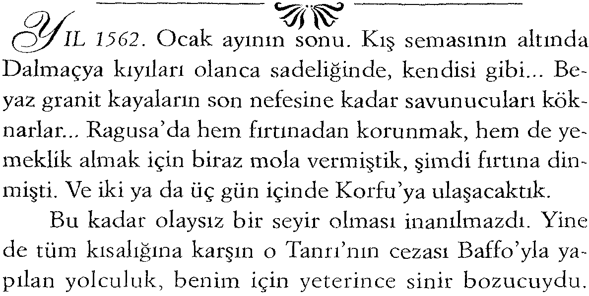

9
UPUZUN
ÖMRÜMÜN, gelmiş geçmiş binlerce günü içinde en unutulmazı Vali Baffo'nun kızına rastladığım gündür.
Ben, Giorgio Veniero, işte o gün, bir manastır duvarının tepesine tırmanmak zorunda kalmıştım.
Hem yılın, hem de benim mevsimime denk düşmesine karşın, gençlik ateşiyle dolu bir karnaval şakası de
ğildi bu. Gizli bir mesajı iletmekle görevlendirilmiştim ve bunu yerine getirebilmek için o duvara tırmanmam gerekiyordu. Venedik Dukası'nın, benzer koşullar altında herhangi bir genç kıza söyleyeceklerinden hiçbir farkı olmayan mesajı ilginçleştiren tek şey, onu ileteceğim genç kızın kendisiydi. Majestelerinin sekreteri, bu genç kızın gizli isteklerinin cevabına biraz şaka ve alay katmayı düşünmüştü galiba.
içimde yeni yeni tomurcuklanmaya başlayan romantizm ve serüven istekleri, bu öneriyle kıpır kıpır oluve-rince balıklama atlamıştım fırsatın üstüne.
Daha önce bir manastır bahçesi görmemiştim, tabii ki bir rahip değildim ve olmaya da hiç niyetim yoktu. Bu ateşlenmenin nedeni herhalde yaşamın kabuğunu çatlatan ilkbahardı. Oysa mevsim hâlâ kıştı ve üzerinde saklanmaya çalıştığım çınarın salkım saçak geyik boynuzlarına benzeyen çıplak dallarındaki yünümsü püsküllerin bana faydası yoktu. Havanın da... Sert, soğuk ve netti, elmas gibi.
Sanki soyunmuş bir bahçenin iskeletiydi gördüğüm; 10 A N N CHAMBERLIN
ıslak, humuslu toprağın kokusu, vıyır vıyır çalışan solucanlar, çiçeksiz nemli tarhlar ve çuval üstünde bir safir gibi gökyüzünün altında yapayalnız, savunmasız dikilen ben. Genç kızın kaçamak konusundaki yeteneklerinin oyuncağı olacağımı, yani bir anlamda onun karşısında çaresiz kalacağımı bile bile ve yakalanma korkusuyla içim titreyerek ağaçta biraz daha yukarı tırmandım.
Havanın ayazından duyarlılığını kaybeden parmaklarını iyiden iyiye beceriksizleşmişti.
Ve sonunda o göründü, yanında halası vardı, ikili, bahçenin öbür ucundaki gri, taş duvarlı yemekhanenin karşısındaydı. Ne duruştu o... Eğer ben de onun gibi, unutulmuş eski bir mezarda açmış orkide gibi dursam başım ciddi belalara girerdi mutlaka.
Yaşlı kadının bana dönük yüzü sanki taş duvarın bir parçasıydı. Kalbim duracak gibiydi, ellerimse giderek şapşallaşmıştı, tutunamaz haldeydim. M a d o n n a Baffo'nun halasını bahçeye çıkarması nasıl bir, dikkatsizlikti.
Şayet bu karşı çıkamayacağı bir beraberlikse, en azından benim gizlendiğim tarafa bakmasını engelleyemez miydi? Manastır bahçesinde saklanan bir genç adam... Beni fark etse, bu yaşlı kadın kimbîlir neler neler söylerdi...
Halanın başörtüsünün arasından görünen yüzü, kış
sonunda bir yaban elmasına benziyordu: Kırmızı, yumu
şak, kırış kırış ve rahatsız edici. Acıyla doluydu... Sepet dibinde unutulmuş bir meyve, dine adanmış bir bekâret, insanlığın parlak geleceği uğruna kendini feda ediş... Acı acı üstüne katmerlenmişti bu yüzde.
Mutsuz rahibeye şöyle bir bakış atmaktan daha fazlasına asla cesaret edemezdim. Kadının yüz hatlarının dışında bir şey daha dikkatimi çekmişti, bu beraberlikte garip bir bağlılık, bir çeşit büyülenme vardı sanki. Tek düşündüğüm Baffo'nun kızının halası üzerindeki etkisini bal
11
gibi bildiği ve bir ip cambazının izleyicilerin nefesini bir an kesmek uğruna dengesini yitirme numarası yapması gibi tehlikeyle oynadığı oldu. Ve kendime sordum; neden, neden izleyiciler oturup, bir hüneri adam gibi seyretmek yerine nefeslerinin kesilmesi heyecanını tercih ederler?
Tekrar bakmaya cesaret edebildiğimde yaşlı kadın gitmişti, sanki buharlaşıp uçmuştu, nereye gittiğini anlayamamıştım ve genç kız onu tanımam için bir şifre olan p o p ü l e r şarkıyı ıslıkla çalarak benim saklandığım yere doğru yürüyordu. "Islık çalan kızları ve horoza özenip ötmeye çalışan tavukları kötü sonlar bekler"... Dedikoducu yaşlı kadınlar gibi b u n u n üstüne bir şeyler türet -
mediysem de manastırda yetiştirilen soylu bir kızın böylesine arsız, hayâsız bir şarkıyı nasıl öğrenmiş olduğunu çok merak etmiştim.
Bana doğru, o çınarın dibinde buluştuklarının ilki olmadığımı ima eden bir edayla ilerliyordu. Biraz hayal kırıklığına uğramıştım ama bir sürprizle karşılaştığım da söylenemezdi. Yine de itiraf etmeliyim ki, halasıyla sık sık oynadığını sandığım bu gizemli oyun beni şaşırtmıştı, bir de sandığımdan çok genç olması...
Gemiciliğimin onu etkilemesini umarak ağacın gövdesinden hızla aşağı kaydım.
Madonna Baffo, on dört yaşına göre uzun boyluydu ve yaşıtlarından daha kadınsı bir görünüşü vardı. Beni esas allak bullak eden inanılmaz güzelliği oldu. Soluğum kesilmişti, sanki gece yarısı bir hayaletle karşılaşmıştım.
Başkaları da bunu söylemişti ve onu gençliğinde, şu kasideciler bile doğmadan önce gören ben de aynı şeyi söyleyeceğim: Yürüdüğünde, bu bir danstı. D a m a taşlı p a t i k a d a , saç tellerine k a d a r t ü m v ü c u d u n u t i t r e t e n adımlarla adeta neşeli bir saray dansı yaparmışçasma geliyordu. Büyü doluydu bu, h e m izleyen hem de yapan 12 ANN CHAMBERLIN
için. Duygu dolu adımlar, ıslıkla çaldığı popüler, bayağı şarkıya eşlik ediyordu. Şarkının adı, hatırladığım kadarıyla, " G e l , haydi aşkım gel, tomurcuklanan koruya gel" di.
Bana ulaştığında, önümdeki çukura düşürdüğüm şapkamı temizleyip üzerindeki mavi boyalı devetüyünün tozunu almaya çalışıyordum.
"Madonna Baffo," dedim, "Size kendimi tanıtabilir miyim? Ben Giorgio Veniero, hizmetinizdeyim, eğer izin verirseniz..."
"Sen Dük'ün adamısın."
Soru sormaktan çok durumu saptayan bir sözdü bu, kızın iş konuşması tonundaki sesiyle hemen derlenip toparlandım. Yine de ona baktığımda pek de kendime gelmiş sayılmazdım. Manastır yaşamının biçimlendirmesi, kıyafetlerinden çok tavırlarında baskındı. Elbisesi, kahverengiyle olgun portakal kızıllığı arasındaydı ve üzerinde şeftalimsi, altın boyamalar vardı. Saten kumaş, âşığının kollarında kıkırdayan şehvetli bir zampara gibi bu zenginliğin pırıltılarıyla sanki yaramazca fingirdeşiyordu.
Aynı zarif görüntüye sahip daha mütevazı etekliklerden en az dört tane daha çıkardı başparmak kalınlığında pililerle donanmış bu elbiseden. Son moda yeleğin önü kısaltılmıştı ve şeffaf gömleğin arasından görünen bereketli gerçek, insanda bin bir arzu uyandırıyordu.
Elbisenin balonumsu kollarının mutlak bir hikâyesi olduğunu düşündüm. Aksi suratlı yaşlı hala, bir kol için en azından iki kat kumaş alınması konusunda kim bilir ne yalvarış, yakarış ve numaralarla, nasıl ikna edilmişti.
Ama mutlaka arkasını döndüğünde kız pek çok şey daha kapmıştı, kumaşın kabarıklıkları ihtirasla doluydu. Havva'nın çaldığı elmanın hem yalvarışın, hem de günahın sembolü olması gibi.
Safiye Sultan 13
Daha önce gayet doğal ve hoş bir biçimde duran pantolonumun önünde aniden beliren münasebetsiz kabarıklıktan tedirgin "Hizmetinizdeyim," diye tekrarladım.
O sabah özenle giyinmiştim. Duvarlara tırmanmam gerekeceğini bildiğimden dizlerime kadar üzeri yaldız işlemeli, lacivert Türk kadifesinden dublelerle kendimi korumaya almıştım. Kıyafetim belki de, saygın elçilik gö-
revlilerininkileri andırır bir havada, bir parça abartılıydı.
Ama yeşil mavi hareli yeni ipek pantolonumun ve çift kat lacivert kadife ceketimin arasından görünen pırıl pırıl beyaz keten gömleğimin yaratmasını beklediğim etkiden emindim.
Denizlerde ve kıyı kayalıklarında geçen yaşamım bana uzun ve güçlü bir çift bacak, düzgün kalçalar ve gergin bir karın vermişti. Bu yüzden pantolonun beliyle çift kat ceket tam olarak buluşmuyor ve bu aralıktan da gömleğim görünüyordu. Bu görüntünün daha fazla aşırılıkla gölgelenmesini istemediğim için kısa kenarlı bir dövüş şapkası seçmiştim. Uzun, hareketsiz bir bekleyişten ve bu genç kızın üzerimdeki ateşli etkisinden titreme nöbetine girmek üzereydim ama yine de şapkamı prova edilmiş bir kabadayıca havayla omuzlarıma doğru geri atmayı başararak onunla yüz yüze geldim, sonra da hemen çenemi ovaladım.
Hâlâ yeterince çoğalmamış olan sakalımı tarayarak, şekiller vermeye çalışarak, alışılmışın dışında zaman harcamıştım o sabah. Sonunda da Madonna Baffo'nun, temiz traşlı Batılı bir görünüşü, benim bir türlü hâlâ edinemediğim sakallı Doğulu görünüşüne tercih edeceğini umarak sinekkaydı traş olmuştum.
Ne yazık ki iki saat sonunda uzamaya başlayan kıllar yalnızca çene ucumdakiler değildi ve almış olduğum bu kararın doğruluğundan artık kuşkudaydım. On beşimde, 14 ANN CHAMBERLIN
yaşıma göre bayağı deneyimden geçmiştim, ama b u n u n bana kazandırdığı özgüven, doğrusu bayağı azalmaya başlamıştı.
Baffo'nun kızı beni kahverengi sonbahar yapraklarının sakinliğinde gözlerle süzdü. Emsalsiz dolgunluğunu daha sonra öğreneceğim ağzı, görüşmemizin hazırlığında ince ve gergindi. Bakışlarıyla beni incelemesi güçlü ve kısaydı ama arzudan yoksun değildi. Yine de, bana doğru ilerlerken beni kîvrandıran acılı arzunun tam karşılığı değildi bu. Pek çok kızın böyle durumlarda bir türlü başa çıkamadığı o yüz göz kızarmalarının ve sıkıntıdan ateş basmaların esamisi bile okunmuyordu onda. Benim soylu süsümün püsümün içine bir dalıverse yalnızca onların altındaki tenimi değil başka şeyleri de göreceği kesindi.
Orada, şaşkın ve kendi düşüncelerimden bile utanarak dikilip kalakaldığım andaki garip durumu ancak uzun yıllar sonra isimlendirebiliyorum. Rastladığı tüm erkeklere yaptığı gibi bende de gözünü diktiği "güç"tü. Üstelik, benim durumumda bu güç, yalnızca bir manastır duvarına tırmanabilmek-ten ibaret olsa bile...
Baffo'nun kızı kımıldadığında dans eder gibiydi, üstelik de işveli bir kadın gibi değil, yarış öncesi kapıda sabırsızlanan bir kısrak gibi. O öğleden sonra, henüz on dördünde, içinde tutuşmuş arzunun adı da "ihtiras"tı.
"Haydi söyle mesajını..." Karmakarışık duyguların yarattığı şaşkınlığım onu sabırsızlandırmıştı.
"Dük tarafından size gizli bir mesaj iletmekle görevlendirildim..." Kızardım ve sonra da kekelemeye başladım.
Neredeyse bir saattir buradasın." Sabırsızlığı vahşice azgınlaşmıştı. " Ve şu ana kadar söylediğin hiçbir şey mesajla ilgili değil. Dük'ün adamı olduğunu ben biliyorum, sen de biliyorsun. Venedik'teki her sokak çocuğu da senin Dük'ün adamı olduğunu biliyor mu?"
Safiye Sultan 15
Elbise kıvrımlarının arasından görünen tenini seyretmekten cevap veremiyordum. Omuzları, köprücük kemikleri, bir dizi inciyle süslenmiş bembeyaz ve upuzun boynu harikulade güzel bir yontu mükemmeliğindeydi. Minik burnu ve çenesiy-le oval yüzü, iki küçük çimdik atılmış Floransa mermerinden bir yumurtaydı sanki. Bu biçim, kulaklarında sallanan ağır, gözyaşı damlası şeklindeki incilerde yansıyordu. Ve gözleri...
O renk, o büyüklük, o ışıklar bademleri hatırlatıyordu.
"Haydi" diye ısrar etti, "Majesteleri Venedik Cumhuriyeti'nin Büyük Dükü bana neler söylüyor? Ben, Sofia Baffo, Korfu Adası Valisi'nin kızı, babam tarafından apar topar adaya gitmem emredildi. Sanıyorum ki, bana adanın görgüsüz zenginlerinden bir koca bulmuş. Bununla hem kendi pozisyonunu garantileyip güçlenmeyi, hem de ada yerlileriyle bir kü
çük kan bağı kurmayı hedefliyor herhalde..."
Onun konuşmasını izlerken, Baffo'nun kızında en belirgin özelliğin saçları olduğunu fark ettim. Pek çok Venedikli kadın güzelleşme uğruna limon ve sirke ile saçlarının rengini açıp onları cansız, mat, yolunmuş ot demetlerine benzetirdi.
Onun sarışınlığı ise gerçekti ve başa çıkılmaz bir canlılıkla doluydu. Pırıl pırıl altın telcikler, başındaki beyaz tülün loşluklarından dökülüyordu. Ve bu baştan çıkarıcı karışıklık, bana onun tamamen masum olmadığını düşündürüyordu.
Masum değildi, fakat o sırada kesinlikle bu etkisinden habersizdi, "Bir Korfulu ile evleneceğim, ha?" diye üzüntüyle bağırdı. "Ben buna mı layığım? Göklerdeki Yüce Tanrım, tırnaklarının içi kapkara kirle dolu bir köylü mü olacak benim kısmetim?"
Utançla, şapkamı kavrayarak ellerimi arkada kavuşturdum, çünkü tırnaklarımı genellikle ihmal ederdim.
"Ben, her şeyin merkezinde olması gereken Sofia Baffo! Tam yürekte... Tam yürekte olması gereken... Tek dileğim bu. Tam yüreğinde olmak her şeyin!"
16 A N N CHAMBERLIN
K e n d i m i b u sıkıntılı d u r u m d a n k u r t a r m a k için, dünyayı da ne çok bildiğimi ima eden bir biçimde "Korfu çok güzel bir adadır" dedim. " O n u n güzel limanında dört kez demir attım. Hatta bir seferinde babanızla da karşılaştım. Çarpıcı bir adam. Tıpkı kızı gibi..." Bu iltifatı onun yüzüne bakarak söyledim ve sessizliğini de devam etmem için verilmiş bir izin olarak algıladım.
"Ve Korfu sanıldığı gibi, öyle her şeyin merkezinden de pek uzak değildir. Bizim Doğu ticaret yollarımızın gırtlağı, Adriyatik Denizi'nin ağzı gibidir. Güvenli bir Korfu, Venedik için çok önemlidir."
"Aptal", diye bağırdı. "Bunları bilmediğimi mi sanıyorsun? Babam çok güzel mektuplar yazıyor, evet... Ama Korfu nedir? Venedik'le dünyanın neresi kıyaslanabilir?
işte San Marko Meydanı, işte Düklük Sarayı, işte dünyanın her yerinden gelen gemilerin yanaştığı Büyük Liman.
işte benim kalmaya kararlı olduğum yer, her şeyin kontrol altında tutulduğu yer..."
O n u n dünyayı bu şekilde hayal etmesini ve bu duyguları keskin bir biçimde bir manastırda yaşamasını oldukça garip bulmuştum.
"Haydi söyle bana" diye devam etti. " D ü k ne diyor?
Bana Korfulu bir köylüden daha iyi bir koca bulmuş m u ? "
"Adam bir köylü değil." Bir başkası adına konuşmak beni nasıl da coşturmuştu. Dürüst olmak gerekirse bunu kendim için asla yapamazdım. "Ailesinin adı Altın Kitap'taki listede." Benimki de, benimki de... Sesli olmasa da yüreğim konuşup duruyordu. Ve ben sülalemizin son erkeğiyim, uygun ve zorunluyum evlenmeye, hatta bunun için ölüyorum. "Adı mutlaka kitapta olmalı, yoksa asil Baffo ailesinden biriyle evlenmeyi insan aklına bile getiremez."
Baffo'nun kızı sert bir el hareketiyle sözlerimi kesti-Safiye Sultan 17
rip attı. Aynı kolaylıkla Altın Kitap'ı da fırlatıp atabilirdi.
"işte D ü k ' ü n yeğeni... Duyuyorum, genç, hoş biri, üstelik bekâr bir adam..."
Şimdi sabrını yitirme sırası bana gelmişti. D ü k ' ü n yeğeninin onun yaşının iki katı olmasına karşın bir şapşal olduğunu biliyordum, üstelik benden daha iyi bir kısmet de olamazdı. "Demek, D ü k ' ü n yeğeni... Bu çok önemli öneriyi Majestelerine yapma cüretini de göstermişsiniz-dir herhalde..."
"Tabii, neden olmasın? Babamın, adımızı küçültme pahasına o valilik gemisini almasına karşın ben bir Baffo'yum ve o n u n gibi de olmayacağım. Kendime uygun biri için herkesle konuşabilirim* Dük'le de, gerekirse Pa-pa'yla da... Aklımdan geçenleri Aziz Marko'ya söylemekten bile çekinmem, eğer beni dinlemezse, bu mükemmel fırsatı kaçırdığı için bu onun kendi hatası olur."
Bir manastır bahçesinde bu tarz sözlerin edilmesinden tüylerim diken diken olmuştu. "Aziz Marko, bireysel fırsatların peşinde ve gereksiniminde biri değildir"
dedim. "Ve genç bir kadın kendi evliliğini ayarlama çabalarında olmamalıdır. Böyle bir şeyi dullar bile yapmaz.
G e n ç kadınlar..."
" K a d m l a r m ı ş ! Yuh olsun... A p t a l kazlar sürüsü.
Onların arasında yaşamak zorundayım, sen bilmiyorsun, asla onlardan biri gibi davranmak istemem, çünkü hepsi de gülünç ve salak. Söyle bana, D ü k ne diyor? Yeğeniyle evleniyor muyum, evlenmiyor m u y u m ? "
"Sanmıyorum" diye cevap verdim.
"Hayır, öyle mi, o halde kim olacak? Barbarigo'lardan biri mi, A n d r e a Barbarigo kötü bir kısmet olmaz, hoş bir adam..."
Bu genç asil adamın bizimkine benzer adının geçmesiyle birlikte heyecandan damarlarımdaki kan azgın 18 A N N C H A M B E R L I N
bir nehir gibi akmaya başladı. O ise beni hiç önemsemeyen bir pozda saymaya devam ediyordu.
"Bir Priuli belki de. Ya da bir Barbaro?"
Veniero adını ağzına almadı. Bizim soyumuz da en az diğerleri kadar gözdeydi oysa. Servetimiz azalmaktaydı ama şahsi çabalarımla onu geliştirip artırma azmin-deydim.
"Haydi söyle bakalım şu Dük'ün mesajını" diye tekrarladı. "Kararlaştırılan yere, kararlaştırılan zamanda geldiğine göre bana söyleyecek bir şeylerin olmalı."
Artık yalnızca ona değil k e n d i m e de kızgındım.
"Majesteleri Dük Hazretleri, babanızın size emrettiği gibi Korfu'ya giden gemiye binmenizi söylüyor, aksi takdirde sizi dizlerine yatırıp kendi öz kızına yapacağı gibi bir temiz dövecekmiş."
"Bir Baffo kızına ne çeşit bir mesaj bu? Bir kibar hanımefendiyle bu şekilde konuştuğun için seni meydanda teşhir ettiririm ben, rezil..."
"Affedin beni Madonna, fakat bunlar tam tamına onun sözleridir. Eğer bunun doğrulanmasını istiyorsanız, benimle birlikte saraya gelin, D ü k ' ü n karşısına birlikte çıkalım."
Aslında söylediğim tam olarak gerçek değildi. Majestelerinin huzurunda daha önce hiç bulunmamıştım, yalnızca onun rutin mektuplarına cevap veren sekreterle görüşmüştüm. Ama şimdi kızın bunu istismar etmesine izin veremezdim. Vali Baffo, Dük'ün seçilmesinde payı olan biriydi ve sadık bir sekreter de, kızı buna uymasa bile Vali'ye itaat edilmesi gerektiğini biliyordu.
Baffo'nun kızı, öfkeyle azıcık renklendirilmiş olsa da gerçeğine çok yakın olan bu küçük yalanıma inandı.
"Pekâlâ, iyi günler Sinyor."
"Veniero". Adımı onun için tekrarladım. O benim Safiye Sultan 19
asaletimi ve unvanımı önemsemese de ben ona özellikle
"Madonna" diyerek bunu bir kez daha hatırlattım.
"Eğer, Barbarigo'ya kendi başınıza birtakım notlar yollamayı düşünüyorsanız" dedim, "bunu unutun." Kıskançlık, sesime keskinlik kazandırmıştı. Devam ettim.
"Belki de biliyorsunuz, ben de sizinle aynı gemide olaca
ğım. Büyük 'Santa Lucia'nın ikinci kaptanıyım."
"ikinci kaptan!" Aşağılayarak söyledi bunu. "Şimdi görüyorum ki yalanlardan ibaretsin; değil bir kadırganın, bir balıkçı teknesinin ikinci kaptanı bile olamayacak kadar gençsin sen."
Bu kez gerçeği söylemiş olmama rağmen, küçümseyen ses tonu beni öylesine yaralamıştı ki, kendimi berbat bir övünme tiradı yaparken yakalanmış gibi hissediyordum.
"Amcam geminin kaptanıdır." diye cevap verdim.
"Sekiz yaşımdan beri onunla birlikte denizlerdeyim ve bana böylesi sorumluluklar verecek kadar güvenir. Bir de şunu eklemeliyim..." Arkasına doğru yürüdüm. "Aynı zamanda sizin ve kutsal refakatçinizin güvenli gezisinden de ben sorumluyum..." Halanın manastırına doğru işaret ettim, "iyi günler Madonna Baffo. Sizinle Aziz Sebastian G ü n ü deniz yükselirken görüşeceğiz."
Kız bunun üzerine nefesini tuttu ve küçük bir öfkeli çığlıkla bıraktı. Durdu, yerden bir avuç çakıl taşı alıp bana doğru fırlattı. Benim gibi gemi halatlarında dolaşmaya alışık biri için duvara bir anda tırmanıvermek hiç de zor değildi. Onun öfkesinin ulaşamadığı duvarın tepesine tünedim.
Şapkama tekrar dokundum ve Vali Baffo'nun kızına veda ettim. "Aziz Sebastian G ü n ü ' n e kadar..."
Sonra duvardan atladım, küfürleriyle uğurlanarak dar sokak ve kanal boyunca uzaklaştım.
ĞLEDEN SONRA başımdan geçenleri anlattığımda amcam Jacope, şaşırmış bir edayla başını iki yana sallaya
er*
rak "ihtiraslı ve başına buyruk bir kız" dedi.
Bir an ürperdim. Aynanın önünde takmaya çalıştığı, çatık kaşlı, grotesk burunlu siyah maskenin ardından gelen hışırtılı ses sanki bir mezardan yükseliyormuş gibiydi.
Amcam, uzun konik bir beyaz şapkanın parçası olan maskeyi yüzünden çıkardı, işte şimdi benim tanıdı
ğım ve sevdiğim adamdı. Anne ve babamı kaybettiğim o korkunç salgında onun da karısı ölmüştü ve beni o büyütmüştü. O benim her şeyimdi. Bin bir rüzgârla dalgalanmış gri saçlar, yıllarca güneş altında kalmaktan kırışmış bir yüz ve çakmak çakmak parlayan kopkoyu gözler...
Çıkarılıp katlanınca deminki korkutuculuğunu yitirmiş olan maskeyi bana doğru uzatarak "Neden bu gece bunu sen takmıyorsun?" dedi.
"Ben mi?"
"Ben, kendi payıma düşen tüm maskelemeyi yaptım gençliğimde. Bir yığın azgınlığı, aptallığı, kafasızlığı saklamak için bol bol kullandım bunu, inan bana."
"Sen mi amca?" Şaşırmıştım. "Benim dindar, Allah'tan korkan amcam... Buna asla inanmam!"
Muzip bir şekilde göz kırptı. "Bana inanmazsın, çünkü ben bunları yaparken daima maskeyle dolaşıyord u m . " dedi. Artık neredeyse onunla aynı hizada olan omzuma dostça vurdu eliyle. " H e r şeyi, zamanı gelince gücü devralan gençlere bırakmak gerek. Sana devredeceklerimin ilki olarak kabul et bu maskeyi."
Safiye Sultan 21
"Ama amca, daha senin için çok zaman var, yeniden evlendiğinde senin yanında sağdıcın olacağım, sonra da..."
"Hayır Giorgio, ben evlenmeyeceğim, istesem de bir oğlum olamaz artık. Bir yığın liman, bir yığın orospu... Taşıdıkları hastalıklar... Isabella'ya, o kadına, tüm erdemine karşın yaptıklarımı, bir başka dürüst kadına daha yapamam. Artık her şey senin elinde. Tanrının verdiği bu bahçeyi yeniden sen canlandırıp güzelleştireceksin. Benim düştüğüm hatalara düşme."
Amcamın bu ani ve alışılmadık konuşma biçimine net bir cevap vermem gerektiğini düşündüm ve "Hayır, aynı hataları tekrarlamayacağım" dedim. "Yalnız bana izin ver, maskeyi bu gece Karnava'da takmayayım."
Alaycı bir edayla maskeyi geri iten amcamın ruh hali değişeceğe benzemiyordu. " Sana bu ata yadigârını, Veniero zamparalarının eski maskesini veriyorum."
Böyle konuşunca artık benim itiraz hakkım kalmamıştı. "Teşekkür ederim yüce yürekli amcam, ben de büyük bir onurla kabul ediyorum," dedim.
"Ama onu bu gece Karnaval'da takacaksın."
Amcam dışarı bakarken avucunda, benim basit, saten göz bandımı alıp buruşturdu. Üçüncü kattaydık. Ailenin daha lüks meraklısı bireyleri kesinlikle alt katları tercih ederlerdi. Ama bizim için, denizde geçen uzun aylardan sonra bu küçük odalar bile harikaydı. Upuzun seferler... Bizim çalışmamız onlara harika dokumalar, Iran halıları, gümüşler olarak dönerdi. Başka yerlerde pek rastlanmayan ama, burası için olağan kabul edilen vitraylar paha biçilmez değerdeydi. H a t t a amcamın şu anda dalıp gittiği üçüncü kat pencerelerindekiler bile...
Pencere, yirmiden fazla kırmızı, yeşil ve düz camdan yapılmış panodan oluşuyordu.
Bulunduğum yerden tek görebildiğim, dairesel kur-22 A N N C H A M B E R L I N
şun çerçevelerin arasında uçan bir martıydı. Amcamın daha fazlasını gördüğü muhakkaktı.
Karamsar ruh halinden kaynaklanan hüzünlü bir sesle "Ah, Venedik..." diye içini çekti. "Eğer Adem'in Havva'yla birlikte kovulduğu Cennet Bahçesi, Venedik gibi bir yer olsaydı, Havva onu yalnızca bir incirle asla kandıramazdı/"
Yaklaşık altı yıl önce ölmüş olan ünlü yergici ozan Pietro Aretino'ya gönderme yapıyordu. Amcamın söylemek istediğini anlıyordum. Bütün o gidip gördüğümüz yerlerden Venedik'i ayıran çok önemli bir özellik vardı: Maskeli Karnaval Geleneği. Bir yandan bunları düşünürken bir yandan da bir başka bahçede beni allak bullak eden Baffo'nun kızını geçiriyordum aklımdan. Sinyorina Baffo, doğrusu istediğimden kısa olarak geçmişti amcamla konuşmamızda ama bu konuyu tekrar nasıl açabileceğimi bilemiyordum, özellikle de amcamın içinde bulunduğu bu tuhaf ruh halinde...
Kendimi öylesine kaptırmıştım ki düşüncelerime, yüksek sesle "Ondan söz etme zevkinden asla vazgeçemem," deyivermiş tim.
Amcam keyifle güldü ve benim bu "büyüyen delikanlı iştahlımla dalga geçti. D a h a sonra şöyle dedi.
"Doğrusu Vali Baffo'nun, kızını hiç de güvenli olmayan yılın ilk seferi için zorlamasını anlayamıyorum. Yani bu evlilik daha uygun bir havada yapılamaz mıydı sanki?"
"Vali, senin maharetini biliyordur amca, senin en büyük fırtınalarda bile en sakin limanları bulup, kızını güvenlik içinde ona getireceğinden emindir."
"Aziz Elmo'ya b u n u n için dua edelim." Amcam bendeki bu ölüme karşı pervasız duruşun gençliğe özgü bir düşüncesizlik olduğunu ses tonuyla ima ediyordu.
Bana bir bakış daha attı ve devam etti. "Ben aslında artık Safiye Sultan 23
bu işi bitirmek istiyorum. Yeterince dolaştım denizlere demir ata ata, bezdim artık. Dua et Giorgio, ayın yirmisinde güzel bir hava olması için dua et. Bir kez daha, yılın ilk seferinde sağlık ve başarı için Tanrı'ya dua et."
Belki de sıkıldığımdan maskeyi takıverdim, hiç dü
şünmeden. Burnumun üzerindeki siyah köseleden, sanki amcamın kendi derisinden yüzülmüş de yapılmışçasma, onun hafif ekşimsi ve tuzlu kokusu geliyordu. Aynada, nişe dayalı duran amcamın Kutsal Bakire heykeliyle yan yana duruyormuş gibi algılanan yansıması beni yine dü-
• •
şundürdü.
Yanaklarımı titreten Sofia Baffo'ya duyduğum arsız açlık, silinmiş tebeşir izleri gibi temizlenip gitmişti sanki, işte böyle yadsınamaz bir etki vardı maskelerin gizeminde. Neşe ve keder, iyilik ve kötülük, gençlik ve yaşlılık gibi kendi bireyselliğinize ait her şey buharlaşıp gidiyordu onu takınca. Hatta erkeklik ya da kadınlık bile saklanabilirdi. Ve daha da ilerisi, hamilelik bile böyle bir maskenin arkasında yok olup gidebilirdi. Hiç doğmamış olmak gibi bir şeydi bu, yani en azından anlatılanlardan bunun böyle olduğunu umuyordum.
Dünya bizi bireyler olarak görmeye başlayınca, soyup değiştirmeye de başlar. " H e r şeyi yapabilirsin" der,
"ama artık asla, asla gençliği denememiş biri gibi değil, küçük âciz adamın küçük âciz oğlu, ya da kızı..." Ama F
bir insanın yüzünden tüm bu yaşanmışlığı da çeker alırsanız orada ne kalır? Özgürlük de yok olur, güç de...
Ruhumda korku dolu bir ürperme hissettim ve bana onay vermesini istercesine amcama döndüm. Bendeki bu hezeyan onu da etkilemişti. Maskesinin altından görünen dudaklarını kaygıyla sarkıttı ve düşünceli düşünceli baktı. Venedik'in çanları çalmaya başlamıştı. Şeffaf cam panonun arkasından kuşların çoğalarak uçtukları görülü-
2 4 A N N C H A M B E R L I N
yordu. Martılar ve güvercinler birlikte akşam duasına çıkmış gibiydiler.
"Haydi, vakit geldi, artık gidiyoruz' dedi amcam.
Yatağın üstünden gece pelerinlerimizi eline aldı ve benimkini bana uzattı.
Hüseyin de belki bizimle gelir diye yan odaya uğra
* ı
dık ama bunu başaramadık. Hüseyin aileye çok bağlı bir eski dosttu. Bizleri öyle severdi ki, Komutan Marc Anto-nio Barbaro'nun gözetimi altında olan kendi ırkından insanlarla bile bir araya gelmezdi. Hüseyin, her zaman bir vakar içinde davranan biriydi, biz de üzerimizdeki bu Karnaval gevşekliğini bir tarafa bırakmamız gerektiğinin bilincindeydik. Ne de olsa o yaşamını Hıristiyan gibi ge
çiren bir Müslüman'dı. Halinden memnun gibi görünse de ne zaman bir kilise çanı çalsa, onun bir müezzinin sesini duyduğunu fark edebiliyordunuz. Yüzünde saklaya
adığı bir yalnızlık ifadesi vardı, buna sıla hasreti de denilebilirdi. Diz kapaklarındaki sızılar ise Mekke'ye dönük bir halının üzerinde dalıp dalıp gitmesindendi belki de. Venedik onu ne kadar az görürse, o kadar huzurlu kalacağı kesin gibiydi.
Ve böylelikle Hüseyin'i kendi düşünceleriyle baş ba~
şa bırakıp yanından ayrıldık. Hizmetkârlar bölümüne uğrayıp zenci Piero'yu aldık yanımıza. D ö n ü ş ü m ü z d e meşale taşımak için ona ihtiyacımız olabilirdi.
Dışarı çıkar çıkmaz da Piero'nun raftan, unutmadan bir tane almış olduğunu ümit ettik. Çünkü böyle kış
gecelerinde karanlık erkenden bastırıyordu. Denizden içeri doğru sert bir rüzgâr çıkmıştı ve iri damlalarla yağmur atıştırmaya başlamıştı. Adak yerlerinden pek çoğunun meşaleleri sönmüştü, yalnızca güçlü olan birkaçı yanıyordu. Aslında Venedik'in dar sokakları bu kutsal mekânların ışığıyla bol bol aydınlanırdı, ama fırtına olma-Safiye Sultan 25
ması koşuluyla. Karanlıkta yanımızdan soğuktan titreyen birkaç Madonna hayalet misali geçti gitti.
Venedik'in taşları sızlanıyor gibiydi, ıslak küfün kokusunu tahtalar salıvermişlerdi. Kanallar alacakaranlıkta çopurumsuydu, üzerlerindeki köprülerin basamakları kaygan kaygan parlıyordu. Altından geçtiğimiz alçak kemerler biraz korunaklıydı, ama çatı süslemelerinde dans edip duran, sudan fırlamış hayaletlere benzeyen ışıklar korkutucuydu. Aslında üzeri kapalı bir gondol gecesiydi, ama eski bir denizci olarak amcam, karaya bir kez ayak bastı mı onun tadını sonuna kadar çıkarmaktan asla vazgeçmezdi.
"Venedik'in gerçek bir kara parçası olduğu konusunda kuşkularım olsa bile," dedi şakacı bir sesle. Pek çok yerde karanlık sular çoktan yükselip, avlulara ve bahçelere yayılmaya başlamıştı.
Sonunda rahmetli annemin akrabaları olan Foscari'lerin sarayına geldik. Bu refah ve zenginlik merkezi, dört katlı parlak tuğla evi çok iyi bilmiyordum. Foscari'ler böyle günlerde verdikleri davetlerle bize karşı ailevi sorumluluklarını yerine getirdiklerini sanıyorlardı.
Hele bir de biz buralardan uzakta, denizde isek gelen bütün resmi çağrıların tadını daha da bir zevkle çıkarır, bana da yaşanacak sıkıntıları bırakırlardı.
Parlak kırmızı ceketiyle kapıyı açan uşak, adımı bir anda hatırlayamadı. Amcam bana imalı bir bakış attı.
Maskenin ardından bile olsa pek çok şey ifade eden bir bakıştı bu. Sessizce durdum, çoğu zaman yaptığım gibi.
Bir gün nasıl olsa Tanrı'nın yardımıyla Foscari'leri olmaları gereken yere oturtacak ve onlara bir daha asla unutmamak üzere adımı öğretecektim.
"Venedik'in sokakları boyunca uzanıp giden adak yeri bolluğunun nedeni anlaşılmaz değil." Amcamın ku-26 A N N CHAMBERLIN
lağına bunu fısıldadığım anda sabrım artık taşmak üzereydi, neyse ki tam o sırada arkamızdaki kapı kapandı ve hizmetkârlar ıslak pelerinlerimizi aldı. "Belki de hemen yarın bir mum alıp, göklerle böyle bir anlaşmaya girmeliyim, ne dersin?"
Foscari'lerin giriş salonu daha yakından ahmak bir hayranlıkla seyretmek istediğim Bellini ve Titian resimle-riyle donatılmıştı. Amcam kendime hâkim olmam gerektiğini ima ederek gülümsedi. Gerçekten o büyük adağı yapma arzusuyla doluydum. Ama yine gençliğe özgü bir biçimde bunu geciktirip duruyordum.
O akşam, Foscari sülalesinden dayılarım, özel tiyatro salonlarında, Noel ve Epiphany yortusuyla da çakışan Karnaval şerefine bir oyun sahneletiyordu. Amcam Jacope ve ben, sahnenin üç tarafını çevreleyen amfi biçimindeki düzenlemenin sol tarafındaki koltuklarımıza ilişirken oyun başlamıştı bile. Bu gecikmemiz için kaşların çatılmasını hak etmesine etmiştik ama burası Venedik'ti ve pek çokları bizden bile daha kaygısızca davranıyordu.
Üstelik maskelerimizin arkasında kim olduğumuz beli değildi, belki de Dük ve kuzeni bile olabilirdik, bundan kim emin olabilirdi?
Bu düşünceler aklımı tekrar eski malum konuya gö~
türüverdi. Kulağına eğilip fısıldadım. " N e dersin amca...? Ne dersin, sence Baffo'nun kızı...?"
"Şimdi o bizim sırtımıza yüklenmiş diğer mallardan sadece herhangi biri" diye imalı bir cümleyle cevap verdi.
Konuşmamız kimsenin u m u r u n d a değildi, çünkü oyuna ilgisini kaybeden herkes konuşuyordu. Genelinde insanlar kendi aralarında canlı bir biçimde çene çalıyorlardı, kart çekenler, zar atanlar bile vardı. Kırmızı kadife ceketli hizmetkârlarsa, ellerinde içki kadehleriyle dolu Safiye Sultan 27
tepsiler, koşturup duruyorlardı. Bazıları da mermer zeminden ayakları üşüyenlere püsküllü yastıklar taşıyordu.
Aslında sahnedeki manzara da pek farklı görünmüyordu. Bir cümbüşlü ziyafette avluya bakan balkona yerleştirilmiş sıradan çalgıcılar gibiydi müzisyenler.
Yeni bir oyundu. Yazarın adını bilmiyordum, tabii gerçekten böyle biri var idiyse ve oyuncular da pek matah değildi. Konuyu kavramam uzun zaman almadı.
"Komedi del arte"den bildiğimiz karakterlerdi bunlar.
Tüm kopya çalışmalarda olduğu gibi ilişkiler tıpatıp aynıydı. Sadece dekor tuhaftı, burnuma çarpan taze boya kokusu, arkadaki panolara yakın geçen oyuncuların kostümlerinin başına pek iyi şeyler gelmeyeceğini düşündürüyordu bana.
Dişi kahraman C o l o m b i n e ' i n çıkmasıyla amcam, sanki maskemin arkasından düşüncelerimi okudu.
"Yükümüze daima işlenmemiş elmas gibi özenle bakmalıyız," dedi. "Ama buna tuzlu balık muamelesi yapabiliriz."
Tatlı bakiremizin başına gelen bin bir tehlikeli maceranın mekânı her zamanki gibi italya dışında bir yerdi.
Sıcak aile yuvasından kaçırılmış ve kendini Türk Sultan ı n ı n hareminde buluvermişti. Sultanı oynayan şalvarlı maskaranın yüzünde karanlık ve şehvetli bir ifade olan bir maske, başında da tabii ki koca bir sarık vardı. Sonunda iş rezalet bir soytarılığa kadar varıyordu. Yaygaracı kaptan ve arkadaşları avaz avaz bağırarak, güya komik bir şekilde, sultanı kendi sarığıyla, "Yaşasın Aziz Marko ve Venedik!" çığlıkları eşliğinde bağlayarak kızı kurtarıyorlardı. Seyirci her ne kadar oyunla ilgilenmese de bu bağırışlar bol bol alkış ve beğeni alıyordu. O n u n için de bu cümleler sık sık yineleniyordu oyuncular tarafından.
2 8 A N N C H A M B E R L I N
Amcama, "Hüseyin'in evde kalması isabet oldu,"
dedim.
Alışılagelmiş bir konunun ve karakterlerin egzotik atmosfere taşınmasının insanlarda yarattığı garip etki be-ni şaşırtmıştı. Sultan, başına bela gelmesine her Venediklinin bayılacağı bir hasımdı. Ama güzel, evlenme çağında, tamamen aileye bağımlı, itaatkâr genç hanımların arsızlığa varan garip çığlıkları daha derinlerde bir fanteziye gönderme yapıyor gibiydi. Ve bunlar galiba düşmanın barbarlığından çok kadınlarımız hakkında bilmediğimiz ve ummadığımız bilgilerle ilgili upuçlarıydı.
Sahneye kurulmuş kaim harem duvarları, manastır duvarlarının arasında geçirdiğim öğleden sonranın bir türlü aklımdan çıkmasına izin vermiyordu.
O sırada "Korfu çok da uzak bir yer değil," dedi amcam gülümseyerek.
Konuyu kolayca kavramanın verdiği bir ilgisizlik içindeydim. Kendilerinden daha da gizemli masklar ta
şıyan bir seyirci kitlesine oyun sergileyen aktörlerin durumu birden bana çok anlamsız göründü. Acaba kim daha büyük bir kahraman yaratmanın çabası içindeydi, seyirci mi, oyuncu mu? Ve kim daha çok şeyi saklıyordu? Yüzüme koyarken beni ürkütücü bir biçimde saran maskenin gizli gücünü hatırladım. Sahnede bir yığın büyük olayı işleme gücüyle başa çıkan aktör, günlük yaşamına döndüğünde hiçbir kınanma riskini göze almıyordu.
Aktörün gücünden daha da büyük olan bir başka güç ise kendisi izlenmeden izleyebilen ve her şeyi bilen seyircininkiydi ki, bu seyirci gerçek soytarılığın aslında bu görüntünün arkasında saklandığını bile biliyordu .
Bizim Colombine'in pembe, dantel maskesine eklediği Türk kadını peçesi aklıma bir başka şey daha getirdi.
30 A N N CHAMBERLIN
mizden çok da farklı değildi. Çeşit çeşit... Akıldane yaşlılar ve uçarı, tatlı gençler.. Olan biten buydu, bir gölge oyunundaki şekiller. Ama düşünelim ki ben de onlar için aynen böyleyim. Bütün anlamlar onlar içindi ama, peki, ipleri oynatan kimdi?
Venedik'in dar sokaklarındaki mum ışıkları bana diyordu ki, Adriyatik'i kendilerine gelin yapmak istemelerine karşın bu insanlar ve hatta maskeleri ve hoyrat seyircileriyle Foscari'ler bile, yani ülkenin en tepedekileri bile, asla ve asla yönetmeye çalıştıkları bu dünyadan emin olamazlardı.
Yüzümü saklayabilmenin bana vermiş olduğu güven duygusunu tekrar anımsadım. O duygu ki bana hâlâ bu gece olan biteni şöylece bir seyretme olanağını veriyordu. Bıraktım gözlerim dolansın ortalıkta. Yeni geli
şen memelerde, kabaran erkeklik organlarında, şişirilmiş vatanperverliklerde ya da kısıtlanmamış şehvetlerde, asla bunların yüzüme yansıyacak gölgelerinden korkmadan baktım etrafa... Düşünelim ki Türk kadınları da böylesi bir özgürlüğü bir Karnaval gecesinde ve hatta başka günlerde, üstelik de doğduklarından bu yana yaşıyorlar...
Ey benim göklerdeki Tanrım. Neler düşünüyordum...
Dünyada en son isteyeceğim bir kadın olmaktı oysa...
"Ama yine de onları anlamaya çalışmak gerek," dedim amcama.
Sahnedeki hareket tam o sırada beni tekrar kendine çekti. Oyunun üzerinde asla ciddiyetle çalışılmadığı kesindi, hatta büyük bir olasılıkla prova bile yapılmamıştı, ama beklenmedik bir gaf ani bir gülüş patlamasına yol açtı salonda. Bu hava herkesi öylesine sardı ki, maskelerinin arkasında gülmekten gözlerinden yaş gelen oyuncular bir süre rol bile yapamadılar.
Safiye Sultan 31
Bizim Colombine, soytarı kılıklı, iriyarı bir hadım tarafından korunuyordu. Bu adamı tanıyordum. Metrelerce ipek kumaştan yapılmış kostüm onun herkes tarafından bilinen tipik devasalığını saklamaya yetmiyordu.
Adam, dayılarımın gondolcusuydu. Bu küçük role konulmasının sebebi de oyunculuk yetenekleri değil, koca cüssesi ve adeta insanın kulağında patlayan davudi sesiydi herhalde. Yüzünden onu tanıyamazdım büyük bir olasılıkla ama, gondolcunun o şişko göbeği ve manda b u d u büyüklüğündeki kalçaları kim olduğunu hemen ele verirdi. O n u , altın yaldızlarla bezenmiş şaşaalı Foscari gondolunda bir yandan kürek çekip bir yandan da duygu dolu şarkıları kükreyerek söylerken çok görmüştüm. O günlerde, çılgınca bir tüketimin sembolü olan süslü püslü, soylu gondollarının tümünün siyaha boyanması kararını henüz almamıştı Dukalık.
Güzel Colombine'e d ö n ü p acıklı acıklı, ayaküstü öğrendiği, iğdiş edilmiş, budanmış, kesilmiş gibi sözler üzerine kurulu diyaloguna başladığında onu daha da kolay tanıdım.
Ama hadım rolünü oynayan gondolcuyu tek tanıyan ben değildim. İki yaşlarında bir çocuk da onu tanımıştı ve kendisini tutanların ellerinden kurtulup sahneye doğru "baba, baba" diye koşturuyordu işte.
Sahnelenen oyunun yarattığı sanal dünyadan kopu-veren insanlar aniden bu adamın yalnızca iki yaşındaki ufaklığın değil aynı zamanda onun on kardeşinin de babası olduğunu hatırlayıverdiler birden.
Yan tarafta oturanlar, "Zavallı karısı, Santa Moni-ka'ya her gün, onu, gondolcunun bu utanılası erkekliğinden koruması için yakarıp duruyormuş," diye dalga geçiyorlardı.
Koca adam eteğini çekiştirip duran küçük ele karşı

32 A N N C H A M B E R L I N
daha fazla kayıtsız kalamadı ve kendisine sevgiyle "baba" diye seslenen bu yumurcağı kucakladı. Neyse ki, yine hamile olduğu şişkin karnından belli olan karısı yeti
şip geldi, önce ufaklığı aldı, sonra da kocasının yanağına bir öpücük kondurup seyircinin alkış ve kahkahaları arasında yerine geçti.
Sonunda oyun tatlıya bağlanmıştı. Son birkaç dakikadır olup biten gülünçlüğe öylesine kendimi kaptırmıştım ki, dizimin üzerindeki elin temasıyla adeta bir şok yaşadım. El, usta bir şekilde yavaş yavaş çalışıyordu.
MCAM, siyah maskesinin üzerinden kaşlarını alaycı bir biçimde kaldırdı. Meçhul maskelinin, hemen yanı başında bana yaptıklarının o da farkındaydı. O bundan rahatsız olmadığına göre benim de olmam için bir neden yoktu.
Gerdanı, bilekleri ve parmakları pahalı ama uyumsuz mücevherlerle dolu, vişneçürüğü kadifeler içindeki meçhul maskeli ince uzun bir kadındı. Geniş kare dekoltesi altın iplikle işlenmiş bir dantelle kapatılmıştı, siyah saçları kat kat dökülüyordu omuzlarına, yüzünü saklayan gizemli maskesi elbisesiyle aynı renkte ve yine altın iplikden örülmüş dantellerle süslüydü. Tam bir Venedikliydi bu haliyle. Kentimizin kuralları, soylu kadınların iki ya da daha fazla renkte kıyafet giymelerini yasaklardı, tabii altın ya gümüş renkli süslemeler bu kuralın dışında tutulurdu. Doğrusu bu kural benim hoşuma gidiyordu, aksi takdirde ortalık zevksiz bir yamalı bohça maskaralığına dönebilirdi.
Bana söylediği ilk sözler şunlar oldu, "Bahse girerim Safiye Sultan 33
ki şu zavallı budanmış Türk'ün durumuna düşmeyeceksin. Eminim bir kadına hayatın zevklerini yaşatabilecek güçtesindir."
Bunları söylerken tiz bir tonda yüksek sesle gülüyordu. Belki de aklımdan hâlâ zaman zaman öğleden sonra olanlar geçtiği için, önce onun, manastırdan kaçıp bir maskenin ardında özgürlüğün tadını çıkarmaya çalı
şan Baffo'nun kızı olabileceğini düşünmüştüm. Doğrusu böyle bir rastlantıyı bekleyip duruyordum için için. Gülüşünden o olamayacağını anlamıştım. Düşlerimin kadını böyle cırtlak kahkahalarla gülemezdi, onun gülüşü bir ilkbahar meltemi gibi olmalıydı. Ama yine de doğrusu kadın ilk bakışta gerçekten de onu andırıyordu, içimdeki fırtına iyiden iyiye azgınlaşıyordu, bu ihtiraslı varlığa artık direnemeyecek haldeydim.
Tek sorunum, kahkalarına eşlik etmeye kalktığımda sesimin onunkini bastıracak bir şekilde çıkabileceği olasılığının yüksekliğiydi.
Müzisyenler oyuna ara verileceğini belirten bir par
çaya geçmişlerdi. Malum işine teklifsiz bir şekilde devam eden yeni refakatçim, "tntermedi'ye taparım, " dedi. Zindanlardan Sultan sarayının kulelerine doğru kutsal bir kovalamaca içinde koşuşturan oyunculara; şarkıcı ve dansçılar şimdi biraz nefes aldıracaklardı.
Konstantinopolis'in minarelerinin üzerini işli bir dokuma kapladı. "Pastoral'in habercisiydi bu ve benim aklım yine öğleden sonraya ve manastırın bahçesine ka-yıverdi. Onlarca terzinin elleriyle ince ince uğraşıp yaptı
ğı bu güzel ağaçların üzerleri yapraklarla doluydu. Oysa yılın bu mevsiminde hiçbir zenginin serveti bunların ger
çeğine sahip olmaya yetmezdi.
Bu doğa desenleriyle bezenmiş perdenin ö n ü n d e yapılan gösteriyse beklenmedik bir deprem yaratmıştı 3 4 A N N C H A M B E R L I N
bizim meçhul maskelide. Dante'nin Cehennem'indeki kayıkçı Phlegyas'ı canlandıran başrol oyuncusu sahneye neredeyse çırılçıplak çıkmıştı. Yalnızca cinsel organının üzerinde parıldayan kıpkırmızı şeffaf bir tül vardı. Bu görüntü yanımdaki hanımın nefesini öylesine kesmişti ki benimle ilgisi bile kopuvermişti birden.
Phlegyas lanetlileri taşıyacağı kayığındaydı. Lanetliler yelpazesi oldukça geniş tutulmuştu. Adem, Havva ve yarı keçi yarı insan satirlerin yanında Majestelerinin Cumhuriyeti'nin hatta Foscariler'in düşmanları bile vardı. Türk Sultanı da belli ki, intermedio'nun oyunla da bir bağlantısı olmasını sağlamak amacıyla arkalarda bir yerde duruyordu. Tanrı acaba bu dünyevi salaklıkları seyrediyor muydu?
Lanetliler sakin ve sessiz bir bağa ulaştıklarında bir ağızdan ağıt söylüyorlardı. Phlegyas ritme uygun bir şekilde zincirlerini sallıyordu. Bu sesler trombonlar ve viyolalarla yeterince kederli bir biçimde bütünleşiyordu. Cin fikirli birilerinin bu aletleri işkence aletlerine benzettiği aklıma gelince, yanımdaki meçhul maskelinin kulağına,
"Müzik de bir işkence metodu olabilir" diye fısıldadım.
Gösteri hakkındaki bu fikrime katılmamasına doğrusu çok şaşmıştım. Ama bu sahneyle belli ki çarpılmıştı ve maskesinin aralığından parıldayan bir damla gözyaşı da sanıyorum, geçmiş günahlarından ötürü duyduğu anlık bir pişmanlıktandı.
"Bu gece için çok fazla..." diye düşündüm.
Kendime başka bir ilgi alanı bulabilmek için çevreme göz gezdiriyordum, birden, salona gecikmiş olarak giren biri genç diğeri daha yaşlıca iki erkeği görerek irkildim. Bunlar amcamla ben zannedilebilecek kadar bize benziyorlardı. Fiziksel benzerlik yetmezmiş gibi genç olanı inanılmaz bir rastlantıyla benim beyaz sivri kula-Safiye Sultan 35
lumla, siyah maskemin aynısını takmıştı. Yaşlıca olanının göğsüne kadar sarkan gri sakallarınıysa hiçbir maske saklayamazdı. Bunların sahibinin Barbarigo ailesinin büyüğü Agostino Barbarigo olduğunu tüm Venedik bilirdi.
O Agostino ki Onlu Konsey'in seçkin bir üyesiydi ve belki daha yüksek mertebeler için de sıradaydı.
Daha genç olanın tüm sıradanlaşma çabasına karşın bu unvanlar hareketlerine sinmiş gibiydi. Barbarigo'nun varisi Andrea olmalıydı bu.
Andrea Barbarigo adı aklımdan geçer geçmez, onu son olarak duyduğum anı hatırladım, bu kelimenin Sofia Baffo'nun somurtkan dudaklarından çıkışını... Elim kendiliğinden tepkisel bir biçimde sol kalçama gitti. Bu adamı düelloya davet edip gebertmeliyimdim.
Genç Barbarigo gergin bir şekilde seyircilere bakıyordu. Gözleri benimkilerle karşılaşınca, aynaya bakmış
gibi şaşarak bir an durdu. Sanki onun aklından da aynı küfürler geçiyordu. Yine de bir maskenin ardında bunlardan emin olmak pek mümkün değildi. Tanıştırılmadı-
ğımız halde bana uzun uzun baktıktan sonra durumun farkında olduğunu belirten sert bir hareketle başını eğdi.
Bu harekete aynı sertlikle başımı eğerek cevap verdim.
Bakışlarını çevirdi.
Bu arada, bizim âşıklar tekrar sahneye çıkmışlardı ve haremde çocuksu bir sorumsuzluk içinde hoplayıp zıplayarak koşuşuyorlardı. Dantel maskeli refakatçimse orman desenli perde kaldırılır kaldırılmaz cehennem ate
şini de unutuvermişti. Ya da en azından bu cehennem azabını benim bedenimin en az bir düzine yerine taşımaya karar vermişti. Öyle görünüyordu ki genç Barbarigo'nun bir tehdit olarak görmediği şeyler onun tam da ilgi alanına giriyordu. Ve bu da doğrusu beni çok etkiliyordu.
36 A N N C H A M B E R L I N
Bir uşağın omzuma dokunan eliyle her tarafım kendine gelip toparlandı, bir tarafa kaymış maskemi düzelttim. Uşak da herkes gibi maskeliydi, ama o ünlü Foscari kırmızısı ceketi onun görevini belli ediyordu. Sessizce eğilip, dikkatle katlanmış bir kâğıdı avucuma sıkıştırdıktan sonra kendisi gibi kırmızı ceketli diğerlerinin arasında kaybolup gitti.
Maskeli refakatçim sert ve yüksek arkalıklı koltuklarımızdan kendisine bir yatak yapmayı henüz başaramamıştı. Gömleğimi belimden dışarı çekmişti ve çıplak tenime altın işlemeli dantelinin ucuyla dokunup duruyordu.
"Belki de gidip bu sarayda daha sakin bir oda olup olmadığına bakmamız g e r e k ' diye fısıldadı.
" H ı m m ? " Bu iç çekişli mırıltı yüzünden neredeyse elimdeki notu okumadan cebime atacaktım ama kenarından gördüğüm imza beni durdurdu. Bu, kıvrımlarla süslenmiş son derecede dişi bir " S " harfiydi. Şimdi bu kâğıt elimi hiçbir altın işlemeli dantelin yapamayacağı bir şekilde kavuruyordu.
Altın dantelli maskeliyi bir kenara bırakıp kâğıdı açtım, en yakın meşaleye doğru tutup, yarı karanlıkta okudum:
"Aşkım... İkinci intermedio. Planladığımız gibi..'
Ve sonra o daha çok şey ifade eden "S"...
"Sevgilim" dedi altın dantelli, kulağıma eğilip, "Nedir o ? "
Boşlukta aranan elinden mesajı kaçırdım ve o an gördüm bu parmakların ne kadar yaşlı olduklarını, daha önce nasıl fark edebilirdim ki, yalnızca kasıklarımın arasında dolaşıp durmuşlardı. Bir şeyi daha fark etmiştim, tüm takısına karşın bir tanesi eksikti, sol elindeki yüzük.
O n u n yerinde ince bir beyazlık vardı sadece...
Safiye Sultan 37
"Sevgilim?..."
Bu kelimeyi kullanmasından rahatsız oluyordum.
Kaba bir sesle, "iş" dedim.
iş söz konusu olunca hep yaptığım gibi amcama dönüp onayını bekledim. Amcamın kaşları daha da havaya kalkmıştı. Kendine bu kadar hâkim olabilmesine hayrandım. Bitişiğindeki koltukta bu kadınla sürüp giden uygunsuz ve beceriksiz durumuma hiç ses çıkarmamıştı. Ve oyuna bayilmasa da en azından Colombine'le soytarısını izleyenlerin yükselip alçalan heyecanlarına kendi tezahüratını uydurabilmeyi başarabilmişti.
Çok önemli bir şeyi unutup da aniden hatırlamış gibi, "Ah, evet, evet, iş" diye kendi kendine söylenmeye başladı.
Bu arada, yanımızdaki kadına çaktırmadan dizinin üzerinden parmağıyla bana salonda bir yerleri işaret ediyordu. O tarafa baktığımda amcamın, notun sahibini gösterdiğini anladım.
Nasıl olduysa, salonun oldukça gerisinde bir yerlerde, kurallar gereği manastır mensubu kadınlara ayrılmış
bölümde oturan bu gecikmiş seyirciler gözümden kaçmıştı. Hafif meşreplerle dürüst aile kadınları arasındaki farklılığı yok eden maskeli Karnaval cümbüşünün dışında üç kişi...
Loş ışıkta, rahibenin kırmızımsı suratını hemen tanıdım. Sanıyorum, koskoca salondaki tek maskesiz olmaktan öte, bir de kendisinin dine adanmış yaşantısıyla tam bir zıtlık sergileyen çevredeki açık saçıldıktan oldukça rahatsızdı, iki yanında oturan maskeli kızlardan soldaki, sağda oturan uzun boyluya göre daha civelek ve talepkâr duruşuyla tahminlerimi doğru çıkarıyordu.
Evet, başından beri beynimde yankılanan o kıvrım kıvrım "S"nin sahibiydi bu. Yanında duran meşalelerden 38 ANN CHAMBERLIN
birini çalacakmış gibi bir havası vardı. Bana yönelmiş ısrarlı bakışlarının altında aklım başımdan uçup gitmişti.
Sahnedeki saçmalık daha ne kadar devam edecekti, intermedio'ya ne kadar kalmıştı, sabrım tükeniyordu...
"Haydi, gitmeyeceğini söyle, birkaç dakikalığına da olsa bir yerlere kaçamaz mıyız, işin biraz bekleyebilir, haydi..."
Orama burama dokunan altın işlemeli dantelin ucunu sivrisinek kovar gibi elimle ittim ve aklımı toparlamaya çalıştım. Ama bir türlü beceremiyordum bunu. Tüm k o n t r o l ü m ü yitirmiştim. Bana... Baffo'nun kızı bana
"Aşkım" mı diyordu?
Düşüncelerime müzik eşlik ediyor gibiydi. El dokuması perde yeniden inmişti ve şimdi de kutsanmışlar şarkı ve danslarla ödüllendiriliyordu. Melekler, esin perileri, flütler, arplar, borular... Ve bulutlar arasında beliren bir klavsen...
Beynimde yankılanan cennet nağmeleri kısmen de olsa sahnede görüntü buluyordu sanki.
Bulutlar Tanrısal bir biçimde dağıldı; altın taçlı, iplerle bağlı Apollo yukarılardan adeta süzülerek inmeye başladı. Müzik yükseldi ve Apollo bize seslenmek üzere ağzını açtı.
Salonun en ücra köşelerine kadar yayılan ses marnlamayacak kadar muhteşemdi. Koltuğuma mıhlanıp kalmıştım, bu kutsal yankılanma beynimin içindeki her şeyi silip süpürüvermişti birden. Gözlerim Apollo'nun ağzından çıkıyormuş gibi gelen, ama aslında bir kadınlar korosundan yükselen sesin kaynağını aradı sahnede. Sonra bunun kadın sesinin de üzerinde bir oktavdan söylendi
ğini anladım. Pırıl pırıl, acı doluydu, kulaklarda kristal bir çığlık...Ve bir kaynaktan doğup çağıl çağıl akan su misali doğal, zorlanmadan, öylece... Bu imkânsızı, şu Safiye Sultan 39
sahnedeki Apollo figürü mü yapıyordu yani? Birden bu bana hiçbir harem maskarasının yapamayacağı kadar inanılmaz bir komiklik olarak göründü. Saçma ve tuhaf ama, gülme duygusu sarmıştı içimi.
Bunu salonu dolduran seyircilerden hiçbiriyle paylaşamayacağımı anladığımdan ben de kendimi tuttum.
Yanımdaki maskeli kadın adeta kutsal bir tavır içinde öne doğru eğilmişti.
"Bu..." dedi, "bu..."
" N e ? " diye sordum.
Şu anda hatırlayamadığım bir isim söyledi, ama kesinlikle bir erkek adıydı bu. "Yüce Foscari bu şarkıcıyı Floransa'daki kiliseden alıp, burada sahneye çıkaracağına dair bana söz vermişti, işte sözünü tuttu. Tam söylendiği gibi ulvi, Tanrısal bir ses... Öyle değil mi sence de?"
Bu kutsal müzik kafamı karıştırmıştı. Tek söyledi
ğim, "Ama nasıl?..." oldu.
"O bir kastrato. Bir çocukluk kazası, safım benim..." diye beni aydınlattı kadın.
Denizciler sağda solda dolaşırken pek çok şey kaçı-
rıyorlardı, anlamıştım. Altın dantelli maskelinin anlattı
ğına göre bu Tanrı'ya adanmış kutsal bir armağandı.
"Bunlar söylenenler. Ama bir de birinci ağızdan duyduklarım var. Bu adam Floransa'da korodaymış çocukken ve ailesi son derece yoksulmuş ve anlarsın ya doktorlar filan..."
"Buna inanamam, bir aile kendi varisine bunu yapsın..."
"inanmalısın. Ve bana dürüstçe söylemelisin. Daha başka ne yapılabilirdi ki? Havarilerden biri der ki 'kadınlar kilisede sessiz olmalıdırlar'. Ama bir yandan da...
Düşüncelerimizle Tanrı'ya en yaklaştığımız anlarda sesimiz de yükselir. Oğlanların sesleri yumuşak ve nettir ve 40 A N N CHAMBERLIN
onlar erkek çocuğudur, kız değil..." Dirseğiyle beni dürterek devam etti. "Böylesi bir mükemmeliğe ulaşmak uzun ve çok disiplinli bir çabayı gerektiriyor. Bu hiç kolay değil. Kutsal Papa bile onun sesini duyunca kendi korosu için böyle birini aramaya başlamış..."
"Ama, bu... Bu inanılmaz, bu doğaya aykırı!" diye bağırdım.
Omuzlarını öyle bir aldırmazlık içinde silkti ki, gençliğini çoktan kaybetmiş kırışık gerdanı bile ortaya çıktı.
"Toplum daima bizlerin üzerinde doğal olmayan yaptırımları uygular," dedi basit bir şekilde. " B ü t ü n bunların arasında yolumuzu bulmaya çalışırız. Sonra neyin doğal, neyin doğaya aykırı olduğunun kararını kim veriyor? Sen çok gençsin, yoksa bunları çoktan anlamış
olurdun zaten."
Sol elinin yüzükparmağmdaki beyazlığı düşünceli bir biçimde ovaladı.
Orkestra iki çıkış daha yaptı ve sustu, Apollo tüm bağlarından kurtulmuş olarak yere inmişti. Bir minik serçenin batan güneşin ışıklarını kanatlarıyla yakalamaya çalışması gibi adeta buluttan buluta uçuşan sesiyle süzülerek yükseldi.
Müzik beni derinden etkilemişti ama bu yanı basımdaki uğursuz konuşmacının etkilenişinden bir hayli farklıydı. Tepemde asılı duran serçe hafifliğindeki ses bana ölümün, dünyaya gelmemişliğin ve hatta düşte bile yaşa-mamişlığm acısını vermişti. Bir de şu aklıma takılmıştı.
Bir yanda başına aynı felaket gelmiş bir adamın haline kahkahalarla gülme, diğer yanda onun gibi bir başkasının önünde neredeyse Tanrısal bir huşu içinde eğilme...
Bu ahlaksızca bir tavır değil miydi?
Apollo demek ki Tanrı için eksiltilmişti. Asla bir çocuğun babası olamayacaktı o artık. Bu ne biçim bir
âafiye Auttan 41
Tanrı'ych, kuralları kim belirliyordu? Daha pek çok on beş yaşındakinin başına aynı şeylerin gelmiş ve gelecek olması beni korkuyla ürpertti.
Karşı cinsten de olsa benim gibi düşünen birine rastlayabilmek umuduyla öylesine, umutsuzca çevreme bakmıyordum. Ve dehşetli bir telaş içinde fark ettim ki, Sofia Baffo halasının yanında yoktu.
" İ ş " diye bağırdım, hem kendimi hem de yanımdaki maskeli kadını İkna etmek istercesine.
Ayağa fırladım. Birden hatırlamıştım, bu ikinci intermedio'ydu.
ENİ, ASIK SURATLI Foscari erkeklerinin ve kızıl saçlı kadınlarının portreleriyle donatılmış, şaşırtıcı bir biçimde kimselerin olmadığı giriş salonundan geçiren uşak, eliyle sol taraftaki bir odayı işaret etti ve "Beyefendilerin dinlenme odası," dedi.
"Beyefendi..." Bu kelime beni tam anlamıyla tarif etmiyordu ama ona nasıl itiraz edeceğimden tam olarak emin değildim. Bir de bu adamın bana malum notu getirenin bizzat kendisi ya da ikizi olduğu düşünülürse galiba en iyisi dediğini yapmaktı, ses çıkarmadan içeri girdim.
Duvarları savurganca tahta ile kaplanmış bir yerdi burası. Etrafta solgun ışıklar çıkararak yanan balmumu kandiller... Kendimi deminki salondan bile daha fazla bir yalnızlık içinde hissettim. Sanata huşu ile bağlı beyefendiler bir kastratonun gösterisini mesanelerini boşaltırken bile kaçıramazlardı elbette. Adamın ciğerlerinden fışkıra-42 A N N CHAMBERLIN
rak yükselen seslerin paradoksu bu odaya kadar ulaşabiliyordu. Madonna Baffo randevumuzun zamanını ne büyük bir ustalıkla ayarlamıştı... Ama, peki, o neredeydi?
Bir erkeğin kendi suyunu Büyük Kanal'ınkine ekleyebileceği küçük balkon perdeyle gizlenmişti. Sinirlerime iyi gelebileceğini düşünerek orayı kullandım. Gecenin yağmuru havaya harikulade bir tazelik vermişti. Doğrusu bu hareketi yaparak bir şekilde dengemi bulmuş gibiydim. Bize bunca dünyevi acıyı ve yalnızlığı yaşatan şu garip organımız, bir yandan da bizi dünyayla buluşturuyordu. Benim suyum kanalınkiyle buluşunca sanki erkekli dişili insanlık dünyasıyla da yeniden buluşmuş gibi olmuştum. Kastratolar ve harem ağaları gibi rahatsızlık verici kelimeler bir sihirbazın oyunundaki gibi kaybolup gidivermişti. Yeniden gerçekliğe dönmüştüm işte.
Ve bu gerçekliğin içinde bu gece Sofia Baffo da vardı. Sofia Baffo, beni arayan, isteyen Sofia Baffo...
Balkondan içeri döndüğümde yan taraftaki içki ve yemek dolu büfeyi gördüm. Çok garipti... Böyle bir büfeden yayılması muhtemel o alışıldık kokulardan hiçbiri burnuma gelmiyordu. Yalnızca kadehlerin değil, her şeyin sanki altınla sivanmışçasma parıldadığı bu sofra hiç dokunulmamış gibi duruyordu. Yanık renkli armutlar, bakırımsı incirler, portakallar, fındıklar... Aralarda bunların nektarlarını yudumlarmişçasına duran bronz kuşlar... Hepsi, hepsi ve hatta süs için aralara serpiştirilmiş
başaklar ve adaçayı demetleri bile üzerlerine ünlü Rob-bia cilası atılmışçasına şıkırdıyordu. Eriyip giden mumların ışığında bu süslü püslü, bereketli görünümlü sofra; sert, yapay ve doyurucu olmayan görüntüsüyle midelerden çok gözler için hazırlanmış izlenimi veriyordu.
O d a n ı n zemini dört çeşit m e r m e r d e n yapılmıştı.
Bunlar öylesine ustalıkla düzenlenmişti ki insan, koyu Safiye Sultan 43
griden, açık altın rengine dönüşen hareketli küpler üzerinde yürüdüğü hissine kapılıyordu.
Arkamda, bu zeminde yankılanan aceleci adımların sesini duydum birden. D ö n d ü m , maskemi ve şapkamı düzeltip baktım, karşımda tanımadığım bir genç vardı.
Rengârenk bir palyaço maskesiyle, kocaman, acıklı görüntülü bir şapka takmıştı. Burası erkeklere ait bir oda olduğuna göre bu genç adamın odadaki varlığına şaşmamam gerekiyordu. Ne var ki duyduğum ayak sesleri bana düşündürmüştü ki...
Delikanlı kımıldandı ve kımıldanır kımıldanmaz da anladım, bu bir erkek değildi. O saray dansı adımları ve
"gel, aşkım haydi gel, tomurcuklanan koruya gel" şarkısı bir manastıra uymadığı gibi külot pantolona da uymuyordu.
" M a d o n n a ? " diye kekeledim.
"Beni tanıyamadın değil mi? D e m e k ki öbürlerini de aldatmayı başarabileceğim."
Tam olarak söylediklerini d u y a m ı y o r d u m , külot pantolonun gösterdikleri karşısında kalakalmıştım. Artık kadınların bacaklarının neden bol drapelenmiş kumaşlar ardına saklanması gerektiğini anlamıştım, ne kadar çok kumaş olursa o kadar iyiydi...
" H e r ne halse... Geldin ve tam da zamanında." Kelimeler sanki dudaklarından patlayarak çıkıyordu. " N e de yaman avcıymış... Tiyatroya geldiğimde üzerine yapışmış
olan o orospu..."
"Kılığıma bak, gel..." insanın gözünü aldatan zemin üzerinde dönüyordu. "Nasıl da uydular bana."
Bana kalırsa çok garipti, çok daha iri bir erkek için hazırlanmış olduğu kesindi. O salak şapka, en güzel yerini, o canım saçlarını saklamıştı. İçine pamuk doldurularak yapılmış pipi ise tam anlamıyla gülünçtü, sağdan so-44 ANN CHAMBERLIN
la, soldan sağa sallanıp duruyordu. Ne var ki, onun vücudunu içine koyduğu hiçbir şeyi eleştirecek durumda değildim.
"Madonna..." Söyleyebildiğim sadece bu oldu. Cennette miydim?
"Bir dakika. Şimdi başka bir işim daha var, bakalım dünyanın öbür yarısına sahip olanlar nasıl yaşıyor?"
Beni süpürürcesine yanımdan geçti, arkasından gittim, dansıyla kendimden geçmiş gibiydim.
Büfeye şöyle bir bakış attı, " H m m , yemekler hep aynı" dedi. "Galiba içkileriniz daha iyi. Biliyor musun bizim perdelerimizin arkasında zarif desenlerle süslenmiş
küçük kaplarımız vardır. Galiba buradan Büyük Kanarı denk getirmekte bayağı zorlanırım." Kalçalarını ve bacaklarını sinirli sinirli kıpırdatarak taş duvarın üzerinden karanlık geceye düşünceli bir biçimde baktı.
" H e r neyse, boşver, gel yanıma aşkım" dedi.
Balkonun perdesini kapattı ve dans ederek sokuldu bana, yanından geçerken bir incir kaptı sofradan. Maskenin göz çukurlarından görünen kirpikleriyle beni yine kalbimden yakalamıştı, inciri bana uzattı ve kolunu koluma doladı.
Altın iplikli dantelin dokunuşunu biliyordum. Sofia'nın çıplak teniyse tam yirmi dört ayardı.
"Haydi Andrea, beni daha çok deli etme, ne zaman kaçıyoruz? Haydi söyle!"
Tam onun beni bir başkasıyla karıştırdığını anladı
ğım anda, o bir başkası da odaya girdi.
"Sofia!"
Kolumdaki kol gerildi ve buz gibi oldu.
Benimkinin nerdeyse aynı olan maske ve şapkasını fırlatan Andrea Barbarigo, "Bu kıyafetleri lobiden buldun öyle değil mi?" dedi sert bir sesle.
Safiye Sultan 45
"Evet, evet..' dedi Baffo'nun kızı.
"Ve sana uydular öyle mi?"
"Önemli olan amacıma uygun olmaları. Ama, sen benim notumu almadın mı?"
" N o t mu, ne notu?"
Eli elimi bıraktı, palyaço maskesinde gözleri öfkeden altın paracıklar gibi parlıyordu."
"Gel Sofia. Gondol arka kapıda. Kaçışımızı bir saniye bile geciktiriri emeliyiz. Yaşadığım sürece bilmelisin ki seninle hiç kimse evlenemez, hele de o Korfulu..." Bana b uz gibi bir bakış anıktan sonra cümlesini tamamladı.
"Seninle yalnızca ben evlenebilirim, ben..."
"Evet Andrea, ben sana aidim, yalnızca sana..."
O büyük tutkuyla onun koluna dokundu ve biliyordum bu an Andrea Barbarigo'nun hayatının tutuştuğu andı. O n u düelloya davet et, düelloya davet et, diyordu içimdeki ses. Fakat ne çare ki, hayal kırıklığı, kırgınlık ve diğer aşağılayıcı duygular arasında kendimi on para etmez hissediyordum.
Rakibim bir kez ateşi almıştı, bana döndü ve adeta o siyah maskeyi delip geçen şu sözleri söyledi. "Bundan tek bir kişiye, tek bir kelimeyle söz edersen bil ki adın aslanların ağzında dolaşacaktır."
Bir aslan ağzı... Düş kırıklığı ve incinen gururuma şimdi bir de bu dehşet verici şiddetin korkusu eklenmişti. Venedik'in daracık sokaklarındaki adaklıklarda bol bol rastlanan aslan ağızları birer karanlık kuyuydu. Onlara bakmazdım bile... Bu gece de gelirken bunu yapmamıştım, gerçi ortalık zaten çok karanlıktı ama, aydınlık da olsa bakamazdım, çünkü ben de herkes gibi onların karabasanların babası olduğunu biliyordum. Kentin içine yayılmış, gözleri çukurda, taştan oyulmuş ağızlar...Venedik Cumhuriyetinin adsız düşmanlarının adlarını bi-4 6 A N N C H A M B E R L I N
len ağızlar... Sinsice yapılan suçlamalar...Bu isimler doğr u d a n O n l u Konsey'in ö n ü n e gidiyordu ve kesinlikle cezasını buluyordu. H i ç kimse Cumhuriyet'i hafife alamazdı. Bir adam ne ile suçlandığını bile öğrenemeden, karanlık, dar bir sokaktaki aslan ağzında yok olan küçük bir kâğıt parçası gibi yitip gidebilirdi. Büyük Barbarigo da O n l u l a r d a n biriydi ve bir akşam yemeğinde oğlu, rahatlıkla onun kulağına bir iki tehlikeli söz fısıldayabi-lirdi...
iki çift aceleci ayak m e r m e r z e m i n d e tıkırtılarla uzaklaştı. Apollo'yu alkışlayıp "bis" isteyenlerin seslen buraya kadar ulaşacak yükseklikteydi.
Sofia Baffo çoktan gözümün ö n ü n d e n kaybolmuştu, sanki buz gibi bir suyla duş yapmıştım. Andrea Barbarigo bu gece akşam yemeğinde benim adımı babasının kulağına fısıldayamazdı. Vali Baffo'nun kızıyla kaçıyordu.
Babası onun suratına tekrar bakarsa kendini şanslı saymalıydı. Aslanın ağzına düşmeyecektim. Benim maskem vardı. Barbarigo beni işkence odasında göremeyecekti.
Adımı bile bilmiyordu o benim. Ve daha da tuhafı Baffo'nun kızı da bilmiyordu bunu. Üstelik benimle, manastır bahçesindeki haberci arasında da bir bağlantı kurmamıştı.
"Toplumsal zorlanmalar içindeki patikalar..." Bu sözler birden aklıma gelmişti, sanırım eski bir denizci atasözüydü. Aynı anda bu gece salondaki refakatçimi de hatırladım, altın iplikten örülmüş dantel maskeli kadını...
Başka ne yapabilirdim? Bir esrarkeş tüm malının gözü önünde yakıldığını görürse ne yapar? Lobiye koştum, gördüğüm ilk kırmızı kadife ceketliye yanaştım, omzuna d o k u n u p , uzaklaşan ikiliyi gösterdim. Galiba, "Evlenmek üzere kaçıyorlar, Foscari Ailesi'nin şerefini on paralık ediyorlar," gibisinden de bir iki cümle söyledim.
Safiye Sultan 47
Birden, ortalık kırmızı kadife ceketlilerle doldu. Ortalık boşalıverdi. Herkes dört bir yana koşturuyordu.
Rahibe küçük bir çığlık attı, sanırım ona biraz nane-ruhu koklatmaları gerekecekti. İhtiyar Barbarigo gümbür gümbür esip güdüyordu. G ö z ü m e bir vişneçürüğü kadife takılır gibi oldu ve toplumun çıkmazları hakkında bana biraz daha ders vermesini arzuladım o altın iplikten örülmüş dantel maskeli kadının. Ama, sanki ben ona da ihanet etmişim gibi, hayal kırıklığı içinde karanlıkta yok olup gitmişti.
G e n ç âşıklar çarçabuk ayrı gondollara bindirilmişlerdi Baffo'nun kızı gözyaşları içindeydi, maskesini fırlatıp atmıştı ve mermerimsi yüzü meşalelerin ışığında öylesine genç, öylesine güzeldi ki...
Andrea Barbarigo bana bir intikam bakışı yollamak istedi, belki de bir düello teklifi... Ama Sofia Baffo onun gözünün ö n ü n d e değildi artık ve kelimeler b a n a daha önce yaptıklarını şimdi ona yapıyorlardı, ihtiyar Barbarigo oğlunu yakasından yakalayıp içeri soktu, artık hiç şansı yoktu.
Baffo'nun kızının gidişini görmek benim de gözlerimi yaşla doldurmuştu. Bir maske bile bu noktada arkasına tam olarak saklanılabilecek bir şey gibi görünmüyordu.
Böylelikle harem hikâyesi insanların aklından, bir gelgitte kanallardan temizlenen lağım suları gibi akıp gitmişti. Colombine, bu defa kaçışını başaramamıştı. Foscari soyundan akrabalarım daha sonra gelip bana teşekkür ettiler ve evlerinin onurunun korunduğunu söylediler. Böylece hepimiz muradımıza ermiş olduk ve mutlu yaşantılarımıza devam ettik.
Venedik'in soylu lordlarınm dikkatini çekmiştim, peki ama neden, neden kendimi bu kadar sefil hissediyordum?
48 ANN CHAMBERLIN
Piero'nun meşalesinin eşliğinde eve doğru giderken, amcam beni kutladı. "İş..." dedim omzumu silkerek...
Amcam ruh halimi anladı ve başka hiçbir şey söylemedi.
Yarıyolda, hâlâ elimde inciri tuttuğumu fark ettim.
O bronzumsu görüntüsünü kaybederek avucumun baskı ve ısısından ezilip büzülmüştü. Midemdeki ağrının nedeni belki de açlıktı, inciri ağzıma attım ve onu yedim. Ardından da hemen hatırladım ki, bu meyvenin çekirdekleri daima gidip dişlerimin arasına saplanarak canımı yakardı, incir midemi daha da kavurmuştu ve bu ağrı şimdi ellerimle, yüzüme de yayılıyordu.
"Aziz Sebastian G ü n ü " diye mırıldandı amcam. "Bu bizim için çok kolay bir sefer olmayacak..."
Dostça omzuma attığı koluyla, ağrım sanki tüm bedenime yayılıyordu.
« ihtiraslı ve başına buyruk bir kız" dedi.
Ama bu benim için bir avuntu değildi ki...
HTIRASLI VE başına buyruk bir kız."
Demir atmış "Santa L u c i a " n m güvertesinde yüksek sesle bu sözleri tekrarlıyordum. Dalgın gözlerimin önünde canım Venedik.... ilerde ufukta Mestre'nin yuvar yuvar gri yeşil tepeleri ve aceleci bir telaş içindeki kent....
T ü m renkler daha bir açılmış, pastelleşmişti. Hayat kırpıntıları...Denizlerde kaybolup, dalgalarla kıyıya vuranlar... H a v a öylesine berraktı ki, D o l a m i t e Alpleri'nin etekleri bile görülebiliyordu. Gözlerim kamaşır gibi oldu. Bunlar, Venedik'in hafiften batak ve kirli sularının Safiye Sultan 49
kokusunu denizinkiyle karıştırarak insanın genzini yakan sert, soğuk rüzgârların d o ğ d u ğ u yerlerdi. Bunlar, h e r yerden görülen San Marko'nun bayraklarını dalgalandıran rüzgârlardı. Zirvelerin puslu mavileri ve bayrakların allı morlu altın yaldızları...
Hava soğuktu ama rüzgâr buz gibi değildi, Aziz Sebastian G ü n ü ' n d e başlayan bu seferimiz iyi geçecekti herhalde.
Limanın dışındaki ada benim adımın da geldiği San Giorgio'ydu. Buranın azizleri için kocaman yeni bir kilise yapılacağı söyleniyordu. Noel'de, eski kilisenin önüne toplanan ve ateş böcekleri gibi gecenin karanlığını aydınlatan binlerce tekne geldi gözümün önüne. Çocukken bu kutsal günlerin benim için daha da özel o l d u ğ u n u d ü ş ü n ü r d ü m , ne de olsa San Giorgio benim azizimdi.
İçerlerde bir yerde hâlâ da b u n a inanıyordum, adaya baktım ve bana yardım et, diye dua ettim.
Kalbim güm güm atıyordu, yüzüm gözüm bu çarpıntıdan kızarmıştı, "ihtiraslı ve başına buyruk bir kız."
Bunları yalnızca kendime söylediğimi d ü ş ü n ü r k e n yanı başımda patlayan bir kahkaha bana nasıl da yanıldı
ğımı kanıtlayıverdi.
" O o o , anlıyorum..."
"Afedersin Hüseyin." N e d e n böyle güldüğünü anlamıyordum.
" D e n i z " dedi. " O , ihtiraslı ve başına buyruktur. Bir an için seni yanlış anladım, çünkü biz Araplar denize kız değil erkek deriz. Biz, onu bazen oyun oynayan küçük bir oğlan çocuğuna, bazen uyuyan bir deve, bazen aklı başından gitmiş tutkulu bir genç âşığa benzetiriz. Zaman zaman deniz, Allah korusun, ağzı köpüklü çılgın bir adama bile döner. Limanın suları bugün nasıl da bir yılanın boğumlarını andırıyor, gelgitle karaya doğru sinsice yük-5 0 A N N C H A M B E R L I N
selen altımizdaki şu şıkırtılı suyu görüyor musun? Demin senin onu bir kıza benzetmeni yanlış anladığım için kusuruma bakma/'
Devam etti: "Ama şimdi yaptığın benzetmeyi anlıyorum, gerçekten harika bir tarif bu dostum. Senin kızını da biliyorum, ipekler ve mücevherler içindekini, bir par
ça utanmaz cinsten galiba, öyle değil mi? Eğer ben babası olsaydım, onu derhal hareme tıkardım. Kim bilir? Belki de bu gördüğüm yılan da bir dişi yılandır; fettan, arsız ve baştan çıkarıcı bir dişi yılan..."
Hüseyin'in gülüşüne katıldım, onun sesindeki şiirsellik çok hoşuma gidiyordu. Anlattıklarına karşı çıkmak aklımdan bile geçmezdi. O, ta babamın sağlığından bu yana ailemizin sıkı bir dostuydu. Çocukluğumda, rengârenk ipek kumaşlar içinde getirdiği Türk şekerlerini, kucağına oturup, nasıl zevkle bir bir mideye indirdiğimi hatırlıyordum. Öksüz kaldıktan sonra amcam bana bir baba olmuştu, Hüseyin de, alışılmadık bir biçimde, bizimle aynı dinden olmadığı halde, bana büyükbabalık yapmıştı.
Ama tabii ki benim şu anda ilgi alanım deniz değildi ve bu beni içten içe rahatsız ediyordu. Hüseyin bilirdi, ben denizi daima bir ana gibi görürdüm ve ona tam olarak güvenirdim, hatta en korkutucu olduğu anlarda bile.
Güvenmediğim Baffo'nun kızıydı.
Amcam, Madonna Baffo'nun sorumluluğunu bana vermişti. G ü n doğduğundan bu yana onun yolunu göz-lüyordum. Hatta işin doğrusu, Korfu-Baffo etiketli sayısız sandık ve bavulun gemiye yüklendiği dünden beri...
"Santa Lucia'nın, sivri yüksek pruva alanıyla, kıç taraftaki açıklığını dengeleyen alçak merkeze iple yukarı çekilen sandıklar birbiri ardına yığılmıştı. Tamamen yükleme yapıldığında güverte neredeyse su seviyesine gelirdi.
Safiye Sultan 51
Böyle sandıkların yalnızca tuzlu balıkla dolu olması gerektiğini her ne kadar kendime defalarca tekrarlamış
olsam da, Baffo armalarını gördükçe hızlanan kalbime söz geçiremiyordum. Tabii ki asla balık kokmuyorlardı.
Tahta aralıklarından arada bir lavanta ya da karanfil kokuları yayılıyordu. Mürettebata gelince, onlar için ağır balık yükü yerine bu hafif sandıkları alıp yerleştirmek çocuk oyuncağıydı.
Yine de bir gemi, manastır bahçesi değildi, kendimi genç ve haşarı hissettiğim soylu çalışma odalarına da b e n z e m e z d i Buranın ikinci kaptanıydım; evim deydim, disiplinli çalışma ortamı, verdiğim emirleri harfiyen uygulayan gemiciler bana b u n u hatırlatıyordu; bir yandan da farklı ışıklarla aydınlatılmış Foscari Sarayı'nda yaptı
ğım gammazlığı d ü ş ü n ü y o r d u m . B u r a d a , b e n d e n n e beklendiğini ve ne yapmam gerektiğini biliyordum, b u n a uygun d a v r a n ı y o r d u m ve o r a d a da böyle yapmıştım.
Tüm Venedik sosyetesi de benden yana koymuştu ağırlı
ğını.
Asi bir genç kızın böylesi bir ağırlık karşısında hiç şansı yoktu. O n u n etrafında, ayağını denize ilk attığı anda fırtınaya yakalanmış biri gibi sinir içinde dolaşmanın hiçbir anlamı yoktu.
Hüseyin, ' ' T ü r k ç e ' d e en sevdiğim şey", diye söze başlayarak yine farklı düşünceleriyle aklımı karıştırmaya başlamıştı, "italyanca ya da Arapça'da olduğu gibi nesnelerin cins eklerinin olmaması. Dişi ya da erkek takıla-rıyla uğraşmak zorunda kalmadan, kolaylıkla konuşuyorsun bu yüzden."
" G e l d o s t u m " diyerek, o n u sabırsızca k o l u n d a n çektim ve yüklemeyi daha iyi görebileceğimiz bir noktaya doğru g ö t ü r d ü m . " A n a d i l i n d e n söz e d e r k e n d a h a dikkatli olmalısın," dedim. "Kürekçilerden biri sözlerini 52 A N N C H A M B E R L I N
duyabilir. Senin g ö r ü n d ü ğ ü n d e n daha farklı biri oldu
ğun anlaşılmamalı."
"Korsanlardan mı korkuyorsun?" Hüseyin güldü.
" T ü r k korsanlardan mı? Gemide sen olduğun sürece hayır."
a Benim kastettiklerim Hıristiyan korsanlardı."
a Galiba Malta Şövalyeleri'nden söz ediyorsun."
"Korsanlardan daha iyi oldukları söylenemez."
"Evet, haklısın daha iyi değiller."
" H i ç kimsenin Konstantinopolis'e gitmesini istemi yorlar. Bu da serbest ticareti engelliyor."
"Onların karşı çıktıkları şey ticaret değil a s l ı n d a . . '
"Malın sahibi dini inançlarına ters düşmediği süre ce... »
"Evet, eğer bir Hıristiyan'a aitse problem olmaz..."
"Yok eğer Müslümanlarınsa..."
" D i n kardeşlerim adına özür dilerim."
"Ben de benimkiler adına."
"Kafamı kurcalayan şu Hüseyin, sen Türklere bağlı bir Suriyelisin."
« Venedikliliğimde bir kusur mu görüyorsun?"
« Venedikçen de Türkçen, Arapçan, Cenevizcen ya da Fransızcan kadar mükemmel. Biraz kilolu ve koyuca tenli olmana rağmen, kılık kıyafetinde yapacağın bir iki değişiklikle muntazam bir Cumhuriyet tüccarı olabilirsin."
Hüseyin b e n i m o n u bu şekilde değerlendirmeme öylesine güldü ki, sırma işlemeli uzun yeleğinin iki yakası sağa sola savruldu. Titizce düzeltti bunları, etek uçları şimdi yine, dizlerinin altında muntazam bir şekilde duruyordu.
"Bahse girerim, duka altınlarının şıkırtısını kutsal inançlarından daha çok seviyorsun. Şarap içmekten, do-Safiye Sultan 53
muz sosisi yemekten de geri durmuyorsun. H a ç bile çıkarıyorsun, hatta hatta Meryem Ana'nın önünde diz çekebiliyorsun. Yine de sıla özleminin rüzgârı içinde esmeye başlayınca, bu bedensel cilanın altında gizlenmiş olan o Müslüman ruhu hissedebiliyorum."
Hüseyin düşünceli, bıyıklarını ve sakalını sıvazladı.
"Amcam senin şu yetmiş top kumaş ve titizce ambalajlanmış dört düzine Venedik kristalinden oluşan yükünü, bu yolculuk bahanesiyle Konstantinopolis'e götürme kararını bana söylediğinde bir an bile duraksamadım.
Sadece sevindim, seninle yolculuk edecek olmaktan ötürü mutlu oldum/'
"Dostum, teşekkür ederim." Hüseyin'in abartılı tavrı belki gizli bir alaydan izler de taşıyordu, ama içtenliği kesindi. "Sana ve amcana, işime yaptığınız katkılardan ötürü daima minnettar kalacağım."
"Bu ilişkinin devamını yürekten dilerim."
"Ve tabii işin de... Aslında mevsimin ilk seferiyle yapacağım ticaret kadar hoşuma giden bir başka şey de bu her şeyden bihaber memleketten biraz uzaklaşma fırsatı bulabilmek..."
"Amcam senin zararsız olduğunu biliyor, ben de biliyorum."
"Bu bir iltifat mı, yoksa?"
"Zaten sen sadece bitmiş malın ticaretini yapıyorsun, Venedik kristaline dünya ç a p ı n d a ün kazandıran sırların değil..."
"Majestelerinin Cumhuriyeti'nde pek çok adamın uğruna hayatını yitirdiği sırlar..."
"Yani sonuçta şunu söylemek istiyordum ben sana: Denizlerde, böyle kendinden başka hiç kimseye şans tanımayan korsanlarla dolu bir denizde, kendini gereğinden fazla açığa vurmamaksın."
5 4 A N N C H A M B E R L I N
Hüseyin, altın dişini göstere göstere yürekten güldü ve "Tamam dostum," dedi. " B u n d a n böyle yolculukta Arapça ya da Türkçe dersi yok."
" O l d u Hüseyin."
"O zaman sen de bana Hüseyin demekten vazgeçmelisin."
H e m e n toparlanıp, üzerine basa basa, "Evet Enrico," dedim.
Hüseyin tekrar güldü. "Bana korsan tehlikesine kar
şı korunma dersleri vermek için bir parça gençsin. Daha bilmediğin pek çok şey var. Ama zamanla öğreneceksin.
Evet... Adım Enrico, Enrico Battista... istanbul'a varana dek... Belki orada ben de seni Abdullah diye çağırırım, Tanri'nın kulu, hizmetkârı..."
Sanki bir başka tartışmaya başlamamak ve konuyu kestirip atmak istermişçesine telaşlı adımlarla güvertenin öbür tarafına doğru gitti ve mallarını dikkatsizce taşıyan birine avazı çıktığı kadar bağırdı. " H o o p , yavaş, seni sersem herif. O elindeki kristal yüküne dikkat et."
Küfürler, tüm tüccarların, hangi dilde olursa olsun ilk öğrendiği şeydir, " i n e k oğlu i n e k " t e n "Senin anan m a h a l l e n i n o n p a r a e t m e z o r o s p u s u y d u " y a kadar...
O n u n Müslüman olduğunu bir anlasalar gerçekten hali haraptı. Neyse ki bu tarz küfürler Hıristiyanlar arasında bol bol kullanılırdı. Bu arada güvertedeki karışıklık çabuk sonlanmış ve ortalık eski düzenine dönmüştü, ben de böylelikle endişelerimden kurtulmuştum.
"Bakalım bu ihtiraslı, zorlu sevgilimizle başa çıkabilecek miyiz?" Hüseyin göz kırparak bana döndü.
"Evet, bakacağız Enrico Amca, beyefendi yani..."
Hüseyin'in kahkahalarına ben de katıldım. Sırtıma bir şaplak attı. Sanki, haydi sen kendi işine ben de benimkine, demek istiyordu.
ki, oraya asılmış bir bayrak gibi sallanıyordum. Yağmur ve pus, günlerden beri ilk kez yoktu ve Venedik onu her zaman hatırlayacağım güzelliğiyle ortadaydı. Sanki suyun ortasından fışkırıyordu. Gökyüzüne doğru yükselen bayraklar ve büyük bacalar... Piazzetta, D ü k l ü k Sarayı'nm kubbeleriyle San Marko Bazilikasının kulesi arasından, fırıncı tavasmdaki ekmek gibi kabara kabara limana açılıyordu.
Ve göz önünde alabildiğine uzanıp gidiyordu yaşam, böylesi bir azizden kaynaklanmış olan yaşam... Meydanda, şafak vakti idam edilmiş iki suçlunun sallandığı dara-
ğacmın h e m e n ö n ü n d e n , yanlarında küçük çocuklarla geçen dadılar... Dilenci ailelerin arasında dolanan bir kadın küfrü bastı... Sergiledikleri ölülerini gömebilmek için gereken parayı sadakadan uman, sıran sıran oturmuş dilenciler. Ceset, en yardımsever insanın bile yakla
şamayacağı iğrençlikte, leş gibi kokana dek bu işi sürdürecekleri kesin.
Deniz tarafında, bin bir limandan getirdikleri malları indiren ya da yeni yükünü alan bizim gibi tüccarlar...
Hızlı bir baharat gemisi kayalıkları geçmiş, limana yanaşmakta... Pruvası da, güvertesi de inanılmaz bir güzellikle süslü ve nakışlıydı... Öylesine yakınımizdaydı ki; kimyon, biber ve tarçın kokulan genzime doluvermişti birden.
Diğerlerinden hiç de daha az öneme sahip olmadıkları halde en sıradan görünenler, okyanusları aşan teknelerdi. Ve hâlâ toprak kokusu yayan sebzeleri taşıyan geniş karınlı mavnalar... G ü n l ü k nafaka peşinde, dalgala-5 6 A N N C H A M B E R L I N
rın tepesinde bir inip bir çıkan balıkçı tekneleri... Ve kalamarın o tuhaf, keskin kokusu...
Denizcilerin bağırışları, martı çığlıklarına karışıyordu. Sürekli olarak zamanın akışını gösteren kilise kulesi saatleri.,. Sonra arada bir duyulan farklı bir çan sesi. Ya bir düğün ya da bir cenazenin habercisi...
Bütün bu insan, hayvan, toprak, su, hayat ve ölüm karışımının bitmeyen dağdağalı müziğini yine en çok dalgaların patlayan köpüklü sesleri ve ahşap teknelerin kendine özgü tok gıcırtıları bastırıyordu. Gözlerimiz ise deniz ve gökyüzünün yansımalarıyla boyanıyordu. Fırıncının ürettiği o lezzetli ekmek gibi bir karışımdı bu.
Kendi başlarına pek hoş ya da anlamlı olmayan kokular, görüntüler ve sesler bütünleştiğinde, işte tıpkı o taptaze ekmeğe benziyordu, tepesi çıtır çıtır, nar gibi kızarmış
bir ekmek. Ve bu ekmeğin pekmez dolu bir çanağa daldırılması gibi, bu harika karışım da limanın sularıyla öyle buluşuyordu.
Ama bugün her zamankinden de daha muhteşemdi..,
"Ey kızıl saçlım nerelerdesin, gel de görsün gününü şu manzara..." Bu, yanımdan geçerken, daima yaptığı gibi, hoş bir şekilde sevdiği şairlerden mısralar okuyarak bana işimin başına dönmem gerektiğini ima eden amcamdı.
Fakat ne çare, hemen yanı başımızdaki baharat yüklü gemi beni günlük yaşamdan kopartıp almıştı. Tarçın, kuş üzümü ve balla tatlandırılmış bir yortu kekinin ba~
şındaymışçasına, bu ses ve görüntü cümbüşünün karşısından bir türlü ayrılamıyordum.
San Sebastian Günü'ydü, suların yükselmeye başladığı gün. Üstelik Pazardı da... Ama deniz ve yılın bu ilk seferi kutsal dinlenme için izin vermiyordu.
Safiye Sultan 57
Bütün bir Cumartesi, manastırdan adeta cesedini sürükleyerek çıkardığı kızla gelecek olan yaşlı halaya bir el vermek için kıyıya inmek zorunda kalıp kalmayacağımı düşünüp durmuştum. Ve işte şimdi Piazzetta'yı geçerek geliyorlardı. Hizmetkârlar, açılmış şemsiyeler, fino köpekleri, kanaryalar... Sanki yürüyen bir çarşı...Tabii ki onun ayrılmaktan nefret ettiği yer aslında manastır değildi. Tüm entrikalarını çoktan çevirmeye başlamıştı meydandaki halka.
Sesleri duyamayacak kadar uzakta olmama rağmen sızlanmaları, yalvarmaları, iç çekmeleri tahmin edebiliyordum. Üzerindeki göz alıcı, p e m b e elbiseyle zaten maskaralıklarını izleyememek olanaksızdı. Sanki o bir dansöz ya da oynayan bir ayıymış gibi etrafında çoktan bir kalabalık oluşmuştu. Bazıları ona yakınlık duyup tezahürat yapıyorlardı. Diğerleri onun D ü k ' ü n ve hatta Tanrı'nin kurallarına karşı çıkmış bir kafadan sakat oldu
ğunu düşünüp el kol hareketleriyle protesto ediyorlardı.
Baffo'nun kızı fenalık geçirdi. Baffo'nun kızı etrafına yumruklar attı. Baffo'nun kızı kaçmaya çalıştı ve onu yola getirmeye çalışan mürettebat tarafından yakalandı.
Mürettebatla flört etmeye çalıştı. Eteklerini havaya kaldırdı, onlara bacaklarını gösterdi, öpücükler yolladı, para dağıtmaya çalıştı ve önlerinde gözyaşları içinde yerlere kapandı. Ve bunlardan hiçbir sonuç alamayınca, bütün kuşlarını, kedilerini, köpeklerini ortaya saldı, onlar olmadan gemiye adım atmayacağı tehditlerini savurarak...
Bu sonsuza kadar devam edemezdi, amcam emretti.
"Çağır onları Giorgio, bu vedalaşma yeteri kadar uzadı...
Ya bir sonraki çan sesiyle demir alırız, ya da bir başka med zamanını bekleriz."
Kıyıdaki adamlarımıza işaret ettim ve neler olacağını merak içinde izlemeye başladım.
5 8 A N N C H A M B E R L I N
Kanaryaların durumu ümitsizdi. Belli ki Venedikliler haftalarca kanallarda, onların rengârenk kanatlarını seyredip, seslerini dinleyeceklerdi. Ama diğerleri, köpekler ve yaşlı hala perişan bir durumda da olsa artık emin ellerdeydiler. Rıhtımın alt taraflarında bir yerlerde o müthiş pembeli de ele geçirilmişti.
"Çok çok iyi..."
Tam bu sırada Baffo'nun kızı öylesine büyük bir hızla, adeta bir gülle ateşi gibi fırlayıverdi ki, herkesin nutku tutuldu, benim de... Adaletin sembolü gibi meydanın ortasında dikilen iki kırmızi granit sütuna koşmaya başladı. Parlak pembe leke darağacına doğru sıçradı, boş bir ipi kaptı ve bu sabah asılanların yanında kendini sallandırmaya kalkıştı.
Kızın halası öldü mü bayıldı mı, belli değildi. Kalabalık soluğunu kesmişti, kimileri çığlık çığlığa nöbetçileri yardıma çağırdı, kimileri bir heykel durgunluğunda, bu garip çarmıha gerilişi seyretmeye koyuldu. Hüseyin yanı başımda, kötü ruhlardan korunmak için Arapça bir dua mırıldanıyordu, ip hemen hemen boynundaydı, danteller, inciler, yakutlar ve altınların arasında bir yerde... Daha önce de fark ettiğim gibi uzun boylu bir kızdı.
Bir adam boyu olan bu mesafeye erişebilmek için parmaklarının ucuna kalkması gerekmiyordu.
Bir tekmeyle sehpayı itti ve amcamın adamı Piero'nun siyah kollarının arasına düştü. Onu, kızı güvenlik içinde gemiye getirmesi için ben görevlendirmiştim ve beni düş kırıklığına uğratmayacağını biliyordum, ama doğrusu yine de heyecanlanmadığım söylenemezdi, derin bir " o h h " çektim. Sonra da kıyıdaki ve denizdeki herkesle beraber kahkahalarla gülmeye başladım. Piero, cesetlerden birinin yanma çökmüştü, Baffo'nun kızını dizlerine yatırmış ve tüm Venedik'in sevinç çığlıkları ara-Safiye Sultan 59
sında ona hak ettiği tokadı basıyordu. Manzara unutulmazdı, kocaman kapkara bir adam ve çırpınan pembe kollar bacaklar... Gördüklerim o kadar hoşuma gitmişti ki, Konstantinopolis'e gider gitmez amcamın adamına armağan olarak bir mercan küpe almaya karar verdim. Bu düşüncelerle kafam dinç, işime döndüm. Madonna Baffo bu gemide bize daha fazla zaman kaybettiremeyecekti.
Bu genç hanımın toplum tarafından evcilleştirilmesi bana özgüvenimi yeniden kazandırmıştı. Kafeslerin arkasındaki bir harem kadını gibi, öylesine uzaktan seyretmiştim bu kepazeliği. Bunun verdiği gücün farkındaydım. Limanın ortasındayken bana onun güzelliği vız gelmişti. Hareketleri saçma sapandı. Aptalca ve çocuksu...
Ondan korkmam için bir neden yoktu. Bu deniz onu da adam ederdi.
Arkamızdan esmeye başlayan rüzgâr yavaş yavaş yelkenleri dolduruyordu. işte gemimiz dalgalar üstünde yine şarkılar söylüyordu. Gemiciler taptaze ve heves doluydu ve akşam üstüne doğru Istria yarımadası çoktan gri, uzak bir gölge halini almıştı. Batan güneşin ışıklarıyla parıldayan sahil anlatılamaz bir çeşitlilik içindeydi. Rüzgârlar bizi koynunda taşıyan geminin atası çam ormanlarının kokusunu getiriyordu. Günbatımının canlı renkleri ertesi günün iyi geçeceğinin müjdecisiydi. Akşam yıldızı bir elmastı sanki. Yunuslar zıplayıp duruyordu.
Bir yığın işim vardı yapacak... Artan rüzgârlara göre yelkenlerin düzenlenmesi, dar ve zor kanallardan geçerken kürekçilerin ayarlanması hep benim görevimdi. İşlerine canla başla sarılan bu adamların suyu yararak ilerleyen küreklerinin ucundan gökkuşakları akardı.
Doğrusunu söylemek gerekirse, o ana kadar bizim dik kafalı yolcumuzu hiç hatırlamamıştım. Oldukça sessiz durmuştu.
6 0 A N N C H A M B E R L I N
Ama, "Çocuklar çok sessiz o l u n c a ' derdi yaşlı da dım, "mutlaka bir yaramazlık peşindedirler."
VII
•MCAM, YAŞLI RAHİBEYİ bana getirdi ve "Bu benim yeğenim Giorgio, ikinci kaptandır. Sorununuzu o çözecek" dedi. Dışarı çıkarken de gözlerime öyle bir baktı ki, bu, "Böyle problemlerle uğraşacak hiç zamanım yok" demekti.
Rahibenin deniz tutmasından yeşilimsileşmiş yüzü gözyaşlarıyla yıkanmıştı. Meydan okuyan bir ifadeyle bana baktı, cesaret almak istercesine tespihinin tanelerine yapışmıştı, sanırım beni onlardan yansıyacak kutsallıkla etkilemek istiyordu.
"Kutsal rahibem."
" G e n ç Sinyor Veniero", bana doğru göğsünü şişirerek döndü, ne yazık ki insanın aklına erotizmden başka bir şey getirmeyen bir tavırdı bu. "Bay Veniero, adamınızı yola getirmenizi istiyorum sizden."
"Adamımı mı?"
" O siyah yaratığı beyefendi."
"Piero mu? Neden? Ne yaptı?"
Bir iki kere sudan çıkmış balığın zorlanması içindeymişçesine ağzını açıp kapadı, ama galiba başına gelen felaketi anlatacak kelime bulamıyordu. Tek çare beni güverteye çıkarıp, kürek çekenlerin yanına götürmekti.
Gittik ve bana bu "rezilane!" durumu elleriyle gösterdi.
Baş kasarasındaydık, önümüzde altınımsı ışıklarla yayılan deniz, tepemizde alacakaranlık bir gökyüzü...
Safiye Sultan 61
Amcamın adamı, onu bulmayı umduğum yerdeydi.
Günün son ışıkları altında, ayağında pamuklu pantolonu, bacakları çapraz, oturmuş ipleri tamir ediyordu. Buraya kadarı normaldi. Şaşırtıcı olan, yanı başındaki bir halat kümesinin tepesine çökmüş olan Vali Baffo'nun kızıydı.
Kıyafetini değiştirmişti. Yaldızlı kurdelelerle süslenmiş, kırmızı erik renginde bir kadife elbise giymişti. Ama pembe ipek hâlâ ortalardaydı. Sanırım bütün öğleden sonrayı elbiseyi kesip biçerek geçirmişti, şimdi de elinde iğne iplik, ondan bizim ihtiyar Piero'ya bir gömlek dikmeye çalışıyordu. Bu sabah limandaki çılgınca gösteri ve darağacında sallanma numaralarının yanında, bu "savaş
artığı" kumaşı hayırlı bir işte kullanma çabası hiç yoktan iyiydi. Bu parlak rengin amcamın adamına ne denli yakı-
sacağı Baffo'nun kızının gözünden kaçmamıştı.
Aslında projesinde henüz tam bir gelişme sağlayamamıştı, bir defa iyi bir terzi olduğu söylenemezdi. Sonra, elindeki işten çok Piero'nun elindekiyle ilgileniyordu.
Onun parmaklarına bakıyor, ustalığı üstüne laflar söylüyor, sanki ertesi gün ipleri kendisi tamir edecekmiş gibi aklına gelen her türlü abuk sabuk soruyu soruyordu.
Halayla birlikte bunları seyrederken Baffo'nun kızının iki kez kölenin üzerine abandığını gördüm, ilkinde onu halatların arasına düşürdü, Piero elinden geldiğince bir kibarlık içinde savuşturdu hamleyi. Bunun beklediği gibi bir sonuç vermediğini görünce, memelerini ortaya çıkaran sahte bir ilgiyle eğilerek, ikinci bir deneme daha yaptı. Gerçek ortadaydı, Madonna Baffo gemideki bir yığın adamın arasından, bu sabah onu kurtaran zenci kölemizi seçmişti fingirdeşmek için.
Kendimi tutamayıp yüksek sesle güldüm.
"Bayım" diye ikaz etti hala beni. "Bu gülünecek bir şey değil."
62 A N N CHAMBERLIN
"Çok haklısınız, asla gülünecek bir şey değil bu" dedim. "Ama zavallı Piero'nun ne yapmasını bekliyorsunuz bu—" Rahibenin acı çeken suratını görünce derhal çenemi kapatıp cümleyi düşündüğüm gibi tamamlamaktan vazgeçtim. "Yeğeninizi kamarama yollayın. Onunla konuşacağım."
"Yeğenimi m i ? " diye sordu kadın. " P e k tabii ki bunu yapmayacağım. Düzeltilmeye ihtiyacı olan şahıs Sofia değil, sizin adamınızdır. Kaldı ki yabancı bir erke
ğin odasına onu yollamam zaten söz konusu olamaz.
Yalnız başına... Yanında ben olmadan...Tanrım sen bana
"Nasıl arzu ederseniz, aziz rahibem. Ama bizim adam pek aklı başında biri değildir. Karşınıza geçip, uslu uslu söylediğiniz her sözü başını sallayarak dinleyecektir, arkasını döner dönmez de dakikasında sizin ona yapmasını söylediğiniz şeyin tam aksini yapacaktır."
« Bay Veniero. Ben basit bir azarlamadan söz etmiyorum. Ben, bu arsız adamınızın cezalandırılmasını istiyorum. Dövülmesini, kamçılanmasını... Sizin şu deniz dünyanızın kuralları her neyse, bunun uygulanmasını istiyorum."
"Evet, kutsal rahibem, anlıyorum ama b u n u n çok fazla bir etkisi olmayacaktır. Bir boğa kadar güçlü ve sağlamdır o." Durumu idare etmeye çalıştığımın farkında olan Piero bana göz kırpıp duruyordu. Kadının ilgisini başka bir yere çekebilmek için sırtını gösterdim elimle. "Bakın," dedim. "Bakm şu izlere, bunlar normal bir adamı kolayca öldürecek yaralara ait. Gördüğünüz gibi ona vız gelmiş. Korkarım ki, pek yola gelebilecek cinsten bir adam değildir."
"Amcanız n e d e n bu adamı tutuyor acaba?" diye sertçe cevap verdi kadın.
(Safiye Sultan 63
"Ondan sağladığımız yarar, çıkardığı belalardan çok daha fazladır e f e n d i m '
Tabii ki yalan söylüyordum. Piero bizim için bir köleden çok daha fazlaydı. Ailenin parçasıydı, üstelik benim atladığım bazı işleri fark edip hemen halledebilecek bir zekâya sahipti. Saf ruhlu rahibe yalan söylediğimi dü
şünmemişti bile.
"O z a m a n ' dedi, "Sizin sözünüze uyacağım. Ama kapının dışında durup konuşulan her kelimeyi dinleyecek... Eğer yeğenim içini bile çekerse... Ayrıca../' Garip çiftin oturmuş olduğu ip yığınlarına ayağı takılmıştı, mırıldanmaya devam etti, "Sizin, benim ona vermiş oldu
ğum nasihatlardan farklı ne söyleyeceğinizi bilemiyorum.
Sevgili îsa, şu kardeşimin yanına sağ salim bir varabil-
"Kızın bekâreti bozulmadan...", yaşlı rahibenin yüzüne bakınca cümleyi içinden böyle tamamlamış olduğunu okuyabiliyordum.
Kapım çalınıyordu. D a h a ben, "Gelin M a d o n n a Baffo" derken o odaya girip kapıyı kapatmıştı bile. Amcamın yüksek arkalıklı koltuğuna kurulmuştum, sesime otoriter bir sertlik vererek, "Buyrun o t u r u n ' dedim.
Oturdu.
"Biraz şarap?" Bardağı doldurdum. "Çok güzel, ge
çen yılın ürünü, Kıbrıs üzümünden."
Tedbirli bakışlarla baktıysa da tehlikeyi göze aldı, kadehi önüne çekti. Bardağımı onun şerefine kaldırdım ama buna cevap vermedi. Çabucak şarabını bitirdi. Gemide içmeye alışık değildi. Ani bir sallanma güçlü içkiyi ağzından burnundan fışkırtıverdi. Oksürdü, tıksırdı. Sesi duyan hala hızla içeri girdi.
64 A N N C H A M B E R L I N
"Halacığım, bir şey yok" dedi kız, hâlâ nefesini dü-
zeltememişti. Bir parça utanmış gibiydi, hala dışarı çıkarken bu ilk zaferimin verdiği hoşnutlukla gülümsedim.
Kendini toparlayan Baffo'nun kızı, gözlerinde kibirli ışıklarla bana bakıyordu. Onun görüntüsünün bende yarattığı acizlikle başa çıkmam gerekiyordu. O, mükemmellikti. Kırmızı erik renginin ona çok yakıştığını düşündüm. Gece ışığında yüzü temiz, soluk, soğuk bir ay gibiydi. Sakin bir adamı bir anda çıldırtabilirdi bu. Tüm avantajımı yitirme tehlikesiyle karşı karşıyaydım.
"Madonna Baffo," dedim, "Aşık oldunuz galiba..."
"Bu sizin üzerinize vazife değil. Sizin işiniz beni geminizde götürmek, hepsi bu."
"Pek tabii ki sizin gönül işleriniz beni ilgilendirmez.
Yalnız şöyle bir şey var, mendilinizi önünde düşürdüğünüz kişi bizim adamımız." Bir yudum şarap daha aldım ve göz ucuyla ona baktım. "Doğrusu, Madonna Baffo...
Sizin gibi genç güzel bir hanım... Bir gemi dolusu sağlıklı genç adam... Tüm başarınız bir zenci köle, öyle mi? San Marko aşkına... Bir adam sizin hayatınızı kurtardığı için onu ödüllendiriyorsunuz zeki bayan, öyle mi? Ama bilmelisiniz ki, ben ona sizi koruması için para veriyorum ve o belayı hallettiği için ayrıca bir de mercan küpe sözü verdim kendisine. Ona bedel ödenmiştir. Eğer birine te
şekkür etmek istiyor idiyseniz, bu ben olmalıydım."
Bana borçlu olmaktan hoşlanmadığı gözlerinden belli oluyordu. Bunu kendi açımdan yine iyi bir puan saydım.
"Haddini bilmez biri olmadığımın şahidi olarak halanızı buraya getirdim. Hemen söylemeliyim ki, bana bir şey ödemek durumunda değilsiniz. Ödül istemiyorum.
Sizin güvenliğiniz benim görevimdi. Bu bir iştir. Ondan başka bir şey değil."
Baffo'nun kızı şüpheci bir havada bakıyordu.
Safiye Sultan 65
"Ama, yine de, bir şeyi hâlâ anlamış değilim..."
Baffo'nun kızı koltuğunda kımıldandı.
"Anlayamıyorum, neden, neden bunca gemicinin arasından Piero?"
Kız kamaranın ışığında, güvertenin aydınlığından çok daha farklı parıldayıp gölgelenen memelerinin beyazlığını göstererek bana doğru eğildi.
« Tahmin et" dedi, bir yudum şarap daha aldı.
« Pekâlâ" dedim, bir süre düşündüm. "Halanızı kıskandırmak istiyorsunuz."
Kıkırdadı. "Hayır."
"Beni incitmek istiyorsunuz. Bir şeyler demek isteyen bir saldırı." Bana en etkili nasıl saldırab ileceğinin düşüncesiyle yüzüm kızarmıştı. Foscariler'in evinde kolumu tutuşturan o kol... Kendimi toparladım. "Bilerek değildir herhalde, evet yemin ederim bu yüzden adamımın peşine düştünüz."
"Kendinizi fazla şımartıyorsunuz Bay Veniero."
Bu defa o bir puan almıştı... "İyi o zaman gemideki başka birini incitmek için."
Kafasını salladı.
"Gemideki biri değil, ama biri var... Birini incitmek istiyorsunuz, peki kimi?"
"Babamı."
"Babanızı mı?"
"Tabii ki onu... Ve evlenmem gereken şu aptal köylüyü. Bay Veniero siz çok safsınız."
"Fakat yine anlamıyorum, sizin bu gemide yaptığınız şeyler... Bunları bilmeyen, görmeyen insanları nasıl incitebilir?"
"Kolayca." Bir sonra söyleyeceği sözle oyunu kazanacağından emin arkasına yaslandı. "Sizin sevgili Piero'nuzun bana bir çocuk vereceğini umuyorum. Baba-6 6 A N N C H A M B E R L I N
ma vâris olarak bir küçük marsık verince nasıl eğlenece
ğimi kimse tahmin edemez."
İçinden gele gele kahkahalarla gülmeye başladı, tabii kapıdakinden hemen malum reaksiyon geldi. Hala, ortada sakıncalı bir durum olmadığını görüp tekrar dışarı çıktığında ben de gülmeye başlamıştım. O n u n bu neşesine katılmam karşısında Sofia bir an duraksadı. Gözlerimden yaşlar gelene kadar gülüyordum. Kadehinin üzerinden, yumruğunu öfkeyle sıkarak bana bakıyordu. Gülme krizimi durduran bu öfkeli bakış oldu. Tanrım, o endi
şeyle karışık, tepeden bakan tavır bile güzeldi.. Artık bu küçük oyunu kazandığımdan neredeyse emin olmama rağmen kendimi ciddi bir tehlike içinde hissediyordum.
Kontrolümü henüz kaybetmemiştim ama o sakıncalı gülünçlük devam ediyordu.
"Gelin Madonna, size bir şey göstermek istiyorum."
Masadaki defterden bir sayfa aldım, kalemimi mürekkebe batırıp yazdım:
"Madonna, bunu okuyabilir misiniz?"
Yazışmamızın güvenliğinden emin olmak için kapıya şeytan gibi baktı. Kalemi aldı ve yazdı. "Sanırım."
Teknenin ve kalemin gıcırtısından başka ses yoktu.
Tekrar yazdım, "Madonna. Amcamın adamı sizi hamile bırakamaz. O bir hadımdır."
"Bu da ne demek?" diye yüksek sesle sordu.
Kahkahamı zor tuttum ve onun bu cahilliği karşısında bir şefkatli baba gülüşü takınmayı daha doğru buldum. "Bir hadım" diye yazdım. "Geçen Cumartesi Foscari'lerin s a l o n u n d a şarkı söyleyen kastrato gibi bir adamdır. Yoksa Andrea Barbarigo ile çok meşgul oldu
ğunuzdan izleyemediniz mi? Bir hadım, erkeklik organları kesilmiş bir adamdır ve iktidarsızdır. Türkler arasında, amcamın onu satın aldığı yerde, bu çok rastlanan bir Safiye Sultan 67
d u r u m d u r . Kadınların yanına koyacakları kölelerden emin olabilmek için, oradaki köleleri..."
Yazmayı bıraktım, daha fazlası gerekmiyordu. Bu bir yalandı. Piero üzerine uydurduğum yalanlardan rahatsız olmaya başlamıştım. Adamın ne aptallığını, ne de iktidarsızlığını bırakmıştım. Aslında onun gibi güçlü bir hadım pazarlarda bizler gibi denizcilerden çok daha fazla para ederdi. Tabii o pazara gelene kadar ameliyattan ötürü sağ kalabilirse... Yani uzun lafın kısası, o da en az bizim kadar erkekti.
Yine de kâğıt üzerindeki bu palavralarım işe yaradı.
Eğer ben, Korfu'ya giden bir geminin aptal ikinci kaptanı, onun başarısızlıkla sonuçlanan özgürlük atağının hikâyesini bu kadar bilebiliyorsam, Venedik sosyetesi kim bilir daha neler söyleyecekti. Genç kız koltuğunda aşağılanmış bir şekilde sallanıyordu.
Yeniden kibarca gülümsedim, ama gözlerini benden kaçırdı.
Onu bu denli burnu sürtülmüş görmekten neredeyse üzülmüştüm.
"Gitmeden şarabınızı bitirin. Kalp kırıklığından ölmenizi engeller."
H e r bir damlayı ayrı ayrı savuran azgın bir öfkeyle kadehi yere vurdu ve odadan dışarı fırladı. Halasının meraklı sorularının hiçbirine cevap vermeden güvertede kaybolup kamarasına gitti.
Arkasından kapıyı yavaşça kapattım, oturup şarabımı bitirdim, ve onun o küçücük "sanırım"ını seyrederek hayallere daldım. Ardından cinsiyetsizlikle ilgili bir yığın şey yazdığım o küçücük "Sanırım". Aşkım diye başlayan notun altındaki "S"nin aynı. Hâlâ yeleğimin cebinde sakladığım o not... Bu yazışmayı da katladım ve aynı yere koydum.



6 8 A N N C H A M B E R L I N
Ertesi sabah ortalarda ne hala, ne de yeğen vardı.
Yalnızca öğleden sonra rahibe deniz tutmasına karşı bir parça hava almak için güverteye çıkmıştı. Ona geçmiş olsun dileklerimi ilettim ve alaycı olmamaya çalışarak, denizlerde büyümüş birinin ona ne gibi bir yardımda bulunabileceğini sordum. O kadar rahatsız birinde görebileceğimden çok daha büyük bir minnet ifadesi vardı yüzünde.
"Tanrı sizden razı olsun sinyor," dedi, başka bir şeyler daha eklemeye çalıştı. " D ü n kamaranızda yeğenime ne söylediğinizi bilmiyorum ama, gerçekten harikalar yarattınız. O andan bu yana değil dışarı çıkmak, yatağında dönmedi b i l e . . '
"Umarım hasta değildir."
"Tanrı'ya şükür, hasta değil. Demirden bir midesi ve çelik gibi bağırsakları var. Yalnızca. Ne diyecektim? Boyun eğmiş durumda. Evet, tam kelimeyi buldum. Boyun eğmiş. En sonunda boyun eğdi. Bunun Korfu'ya kadar devam etmesi için Tanrı'ya dua edeceğim."
VIII
Safiye Sultan 69
Onu tekrar görmüştüm tabii ki... Halasından yükselen öğürtülere ve kokulara dayanamayıp temiz hava alabilmek için kendini kamarasından tekrar dışarı atması bir günden fazla sürmemişti. Ama bir şekilde teknede hep benim olduğum yerlerin tersinde bir yerlerde dolaşmıştı.
Ben açığa bakan tarafta balıklarla uğraşan.adamlara yardım ederken, o gidip karayı seyrediyordu. Ben geçtiğimiz yerleri işaretlemek üzere kara tarafına gittiğim deyse, açıktaki günbatımını çok daha ilginç buluyordu. Ben kıç tarafında dolanırken, o pruvanın en ucunda, Korfu'ya bir an önce kavuşmak istercesine ileriye uzanmış oluyordu.
Ve ben ileriye gelince, kıçtan geride bıraktığımız kara par
çasına oralardan zorla koparılmış gibi dalgın bakıyordu.
Zavallı Piero'dan ise bir vebalı gibi kaçıyordu ve o ünlü pembe gömleği de asla bitirmeyi düşünmediği belliydi. Dostum Hüseyin'le sohbet ettiğini görmüştüm zaman zaman. Önceleri beni kıskandırmaya çalıştığını dü
şünmüştüm ve umurumda değilmiş gibi davranmayı yeğlemiştim. Sonradan da oturup düşünmüştüm, belki de ona Müslüman erkeklerle ilişkiye giren genç Hıristiyan kadınları bekleyen tehlikelerden söz eden bir not yazmalıydım. O n a haremin karanlık duvarlarını anlatmalıydım.
Galiba bunda bana en fazla cazip gelen, onunla yeniden kamaramda baş başa kalabilme umuduydu, loş ışıklar altında, morlar, yaldızlar arasında ona tekrar bir kadeh şarap ikram edebilmek...
Neyse ki ben bu aptallığı ve ihaneti yapmadan, Hüseyin bana kızın onunla niçin ahbaplık ettiğini anlattı.
Hüseyin, amcam ve benim dışında onun gemide konuşabileceği tek insandı. Amcam, işiyle yeteri kadar yoğunlaşmıştı ve bir çocukla zamanını harcayamazdı. Bana gelince, göz göze bile gelmek istemediği biriydim onun için.
7 0 A N N C H A M B E R L I N
Sanıyorum bu barış ve sessizlik için şükretmeliydim.
Ama çok gençtim ve Baffo'nun kızının babasının kollarına güvenlik içinde kavuşmasıyla, hayatta bir daha karşılaşılmayacak o gerçek macerayı ıskalayacak olanın, sadece o olmayacağını biliyordum, bu duygu da içgüdüsel bir şekilde beni deli gibi çekiyordu,
Hüseyin'e hangi düşünceyle duygularımı açtım bilemiyorum ama, "tam düşündüğüm gibi..' derken gülümseyen ağzında parıldayan o altın dişin ışıltısını hatırlıyorum, " N e düşünüyorsun ki?"
"Sen âşıksın dostum."
"Saçma."
"Tamam. Senin dediğin gibi olsun. Aşık değilsin."
Hüseyin omzunu silkti. Sonra dalgacı bir bakışla karanlık gecede denizi seyretmeye koyuldu.
"Tamam," dedim, "kazandın, ama bu o kadar aleni mi?"
"Senin duyguların senin için ne kadar aleniyse o kadar.."
Suçüstü yakalanmış bir yaramaz çocuk gibi utandım.
"Evet, onun benden ne kadar tiksindiğini biliyorum. "
Dudaklarındaki alaycı gülüşü saklamaya çalışan Hüseyin, "Bunu bilemem" dedi. "Ama eğer Öyleyse, demek bu duygu sizin aşkınızda ikiz bir duygu..."
"Sana bunu mu söyledi?" Kıskançlıktan kudurmuş
gibi sormuştum bunu, geminin benden uzak yerlerinde tadına varılan bir sırdaşlığa nasıl tahammül edebilirdim...
"Yok, yok, genç dostum. Yalnızca havadan, Venedik'ten söz ettik biz. Ama sana bunu söyleyebilirim, eminim bundan..."
Safiye Sultan 71
"Dostum" dedim gülerek, elimi onun düşüncelerini de kovalarmışçasına salladım. "Sen, saygın hiçbir kadının halk arasında yüzünü bile göstermediği bir ülkeden geliyorsun. Kadınların düşüncelerini okuyamazsın, hiçbir deneyimin yok. Eğer dikkat etmiş olsaydın, onun ge
çen hafta boyunca nasıl benden uzaklarda, beni hiçe sayarak dolaşmış olduğunu fark ederdin. Seninle bir kocaman altın için bahse girerim ki, ben açığa gitsem o kesinlikle, hiç nedensiz, içgüdüsel olarak kara tarafına ko
şar."
"Altının senin olsun" dedi Hüseyin. "Eminim ki sen haklısın. Sana vebalı gibi davranıyor."
Onun bu açıklamasından memnun olmuştum. Kü-
rekçilerin rahatlıkla yayılmasından, ortalıkta yalnızca erkeklerin olduğu belliydi. Bu gece kamarasına erken gitmiş olmalıydı. O n u karanlıkta kaybolmaya yüz tutana kadar izleyen ben, bundan emindim. Hiçbir şey söylemedim, Hüseyin devam ediyordu.
"Siz, arkadaş olmadan önce, birbirine tırnak göstererek tıslayıp pıslayan kedi yavruları gibisiniz. Ben daha profesyonel bir yaklaşımı tercih ederdim. Baba, kızını ticarette birtakım ayrıcalıklar karşılığında veriyor. H e m keseye hem de vicdana yararlı bir şey... insanın ömrü uzar..."
"Eee tabii Hüseyin, ticaret yaptığın yerler kadar karın var senin. Halep'te bir tane, Konstantinopolis'te bir tane, Venedik'te bir tane..."
"Bana bunları sağlayan peygambere şükürler olsun.
Ama galiba işin aslında yirmi karım bile olsa, senin şu acıklı, yaralı romansını tercih ederdim."
"Benden ne yapmamı bekliyorsun Hüseyin? Gidip kendimi Vali Baffo'ya sunayım mı? Hizmetinizdeyim efendim, kızınızı o soylu Korfuluyla evlendirmeyin.
7 2 A N N C H A M B E R L I N
Benim gibi engel tanımaz bir çalışkan damada sahip ol-maktansa niye bıı adada saplanıp kalıyorsunuz? Üstelik de geleceğim parlak, Venedikli iyi bir aileden geliyorum, Tanrı yi inkâr eden, içen, küfreden bir adamım ben, on ayın dokuzunda uzaklara giden, kızınızı Venedik'te bir ba
şına bırakacak olan bir adam..."
"Venedik, onun yaşamak istediği yer."
"Allah korusun... O n u , para ve özgürlük içinde Venedik'te tek başına bırakmak... Bu dünyada onu bırakabileceğim en son yer olur."
"Doğru, bu çok mantıksız olurdu" dedi. H e r h a l d e gözünün önünden haremin duvarları gelip geçiyordu.
"Ya da b u n u n zıddı? Ben, Giorgio Veniero, Venedik'te dükkânımda hiçbir halt etmeden oturup paralarımı sayacağım ha? Ben denizle evliyim."
"Ve o berbat bir metrestir."
"Hüseyin, dostum. Sanıyorum siz Araplar'ın denizi bir erkek olarak kabul etmesinden yana gönlüm."
"Seni günün sonunda evine yollayan bir efendi. Bir metres çok daha iyidir, seni kapının ö n ü n d e elinde terliklerin ve yüreğinde bin bir arzuyla bekler..."
" N e yapmalıyım Hüseyin?"
"istediğim kadar iyi İtalyanca konuşayım, uygun elbiseler giyeyim, ben asla bir Venedikli olamam. Siz kendi yarattığınız denizin hayalini seviyorsun. Belki başka hayaller de işinize gelir. Siz Venedikliler daima kafa yorup durursunuz 'ne yapmalıyım, ne yapmalıyım?' Sanki elinizde durumları değiştirebilecek güç varmış gibi.. H i ç de yok... Dostum, bu Allah'ın ellerindedir, bizim gibi küçük karıncaların yapabileceği pek fazla bir şey yoktur. Biz Müslümanlar onun için, 'inşallah' deriz, 'Allah'ın dediği olur' deriz."
Safiye Sultan 73
Bir ses, bizi felsefe dolu bu konuşmadan kopardı.
Solumuzdaki odun yığının oradan gelmişti. Biz sese doğ-
ru döndüğümüzde, uzaklaşan bir şekil gördük. Bu patır-tının nedeni saten eteklikli bir şekildi.
"Bu neydi" diye sordum.
"Sormaya ihtiyacın mı var dostum?" dedi Hüseyin.
"Tanrım, Baffo'nun kızı. Acaba ne kadarını duydu?"
" H e r şeyi" dedi Hüseyin, kadere bak, dercesine anlamlı bir gülümseme vardı yüzünde.
Kızın kazandığı bu zafer yumruk gibi oturmuştu mideme. Kafamdan söylediklerimi defalarca geçirdim, ama hiç kurtuluş yoktu. Sadece bir kerecik benim yanıma gelmişti, ona olan aşkımı itiraf etmemi dinlemek için...
İşittiklerini inkâr etmenin bir yolu yoktu. Kahkahalarını, oh olsunlarını, cephaneleğini bir bir saymasını hayal etmek tahammül ötesiydi. Güçsüz, salak bir itirafın çıkma-zmdaydım.
Düşündükçe anlıyordum, bu itirafın nedeni Hüseyin'in alaycı gülüşüydü. O kıza âşık olduğuma inanmıyordum aslında. O, her şeye rağmen bir çocuktu. Yaramaz, saf bir çocuk, akıldan daha çok öfkeye, sevgiden daha çok tutkuya sahip bir çocuk.... Gerektiğinde kuvvetle, acımasızca durumu kontrol altına alabileceğime ikna etmeye çalışıyordum kendimi, bunun güvencesini hissedebilmek için tüm gece uğraştım.. Sabaha karşı, güverteye çağrıldığımda uykusuzluktan yorgun ve tahammülsüzdüm. Onun duyduklarını düşünmekten hâlâ kendimi alamıyordum, aşktan da daha tehlikeli bir durumdu bu.